<!doctype html>
<html lang="en">
<head>
  <meta charset="utf-8">
  <meta name="viewport" content="width=device-width, initial-scale=1">
  <title>arxiv digest — 2026-07-15</title>
  <style>
:root {
  --bg: #ffffff;
  --fg: #1f2328;
  --muted: #59636e;
  --border: #d0d7de;
  --card: #f6f8fa;
  --link: #0969da;
}
body {
  max-width: 980px;
  margin: 0 auto;
  padding: 2rem 1rem 5rem;
  font-family: -apple-system, BlinkMacSystemFont, "Segoe UI", Helvetica, Arial, sans-serif;
  line-height: 1.55;
  color: var(--fg);
  background: var(--bg);
}
a { color: var(--link); }
img { max-width: 100%; height: auto; }
pre, code { background: var(--card); border-radius: 6px; }
pre { padding: 1rem; overflow-x: auto; }
blockquote { border-left: 4px solid var(--border); padding-left: 1rem; color: var(--muted); }
details { margin: 0.6rem 0; }
summary { cursor: pointer; font-weight: 600; }
.paper-figures-scroll {
  display: flex;
  gap: 1rem;
  overflow-x: auto;
  overscroll-behavior-x: contain;
  padding: 0.75rem 0.25rem 1rem;
  margin: 1rem 0 1.25rem;
  border-top: 1px solid var(--border);
  border-bottom: 1px solid var(--border);
  scroll-snap-type: x proximity;
}
.paper-figure-card {
  flex: 0 0 min(260px, 72vw);
  scroll-snap-align: start;
  background: var(--card);
  border: 1px solid var(--border);
  border-radius: 12px;
  padding: 0.55rem;
}
.paper-figure-card img {
  display: block;
  width: 100%;
  max-height: 240px;
  object-fit: contain;
  background: white;
  border-radius: 8px;
}
.paper-figure-caption {
  display: block;
  margin-top: 0.5rem;
  color: var(--muted);
  font-size: 0.85rem;
}
.figure-strip-hint {
  color: var(--muted);
  font-size: 0.9rem;
  margin-bottom: -0.3rem;
}
</style>
  <!-- MathJax: renders $...$ inline math and $$...$$ display math, plus
       \(...\) and \[...\]. Loaded from the official CDN; works offline
       once cached. Configured to skip code/pre blocks so arxiv IDs that
       look like dollar amounts don't get mangled. -->
  <script>
    window.MathJax = {
      tex: {
        inlineMath: [['$', '$'], ['\\(', '\\)']],
        displayMath: [['$$', '$$'], ['\\[', '\\]']],
        processEscapes: true,
        processEnvironments: true
      },
      options: {
        skipHtmlTags: ['script', 'noscript', 'style', 'textarea', 'pre', 'code'],
        ignoreHtmlClass: 'tex2jax_ignore',
        processHtmlClass: 'tex2jax_process'
      }
    };
  </script>
  <script id="MathJax-script" async
    src="https://cdn.jsdelivr.net/npm/mathjax@3/es5/tex-chtml.js"></script>
</head>
<body>
<header style="background-color: #333; color: white; padding: 15px; margin-bottom: 20px;">
  <h1 style="margin: 0; font-size: 24px;">
    <a href="https://ochelpan.github.io/arXiv_clean/" style="color: white; text-decoration: none;">Main</a>
  </h1>
</header>

<h1>Daily arXiv Report</h1>

<hr>
<p>
<a href="index.html">← Index</a>
 · <a href="papers_02.html">← Previous</a> · <a href="papers_04.html">Next →</a>
</p>
<hr>

<h2>Papers 41–60</h2>
<p><a id="paper-2607.10663"></a></p>
<h3 id="certified-boundary-magic-witness-for-state-dependent-proto-area-in-a-holographic-code"><a href="http://arxiv.org/abs/2607.10663v1">Certified boundary-magic witness for state-dependent proto-area in a holographic code</a></h3>
<p><strong>Authors:</strong> Luis Lozano<br>
<strong>Type:</strong> theory · <strong>Category:</strong> quantum information and computing · <strong>PDF:</strong> <a href="https://arxiv.org/pdf/2607.10663v1">https://arxiv.org/pdf/2607.10663v1</a><br>
<strong>Analysis basis:</strong> full PDF text, analyzed in chunks
<strong>Topic relevance:</strong> 🔥 <code>entanglement &amp; information structure</code> <strong>4/5</strong> · <code>Keldysh / 2PI / non-Gaussian methods</code> <strong>1/5</strong> · <code>correlated / nonlocal dissipation</code> <strong>1/5</strong> · <code>driven-dissipative phase transition</code> <strong>1/5</strong> · <code>methods for driven-dissipative</code> <strong>1/5</strong></p>
<div class="figure-strip-hint">↔ Scroll figures horizontally</div>
<div class="paper-figures-scroll">
<figure class="paper-figure-card">
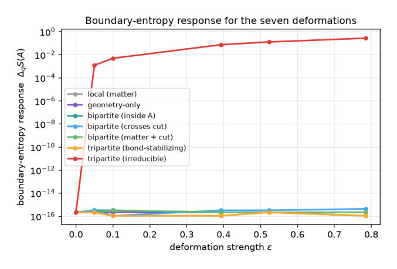
<figcaption class="paper-figure-caption"><b>Fig 1.</b> Figure 1. Peak-to-peak boundary response ∆qS(A) for the seven generators. Only the matter- controlled bond move has a leading quadratic response; the comparison families remain at numerical zero.</figcaption>
</figure>
<figure class="paper-figure-card">
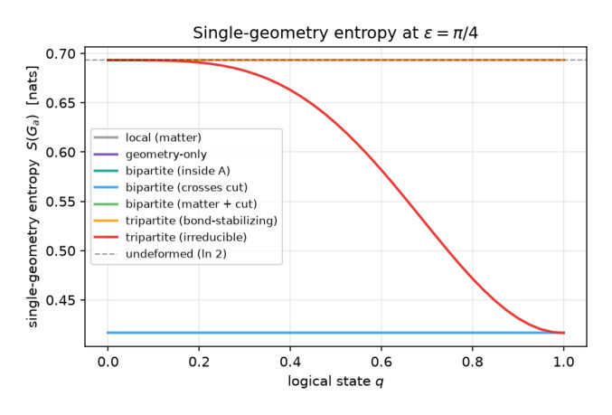
<figcaption class="paper-figure-caption"><b>Fig 2.</b> Figure 2. Exact single-leg entropy S(Ga) along the real logical meridian. The bond-moving deformation follows Eq. (3.2); the comparison families are flat. For these conditioned states S(Ga) = S(A), although the two quantities have different definitions.</figcaption>
</figure>
<figure class="paper-figure-card">
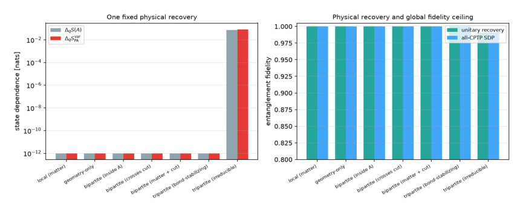
<figcaption class="paper-figure-caption"><b>Fig 3.</b> Figure 3. Left: boundary and variational proto-area responses obtained from one fixed physical recovery per channel. Right: entanglement fidelity of the coherent-information-optimized unitary recovery and the independent all-CPTP fidelity SDP. Exact zeros are drawn at the plotting floor.</figcaption>
</figure>
<figure class="paper-figure-card">
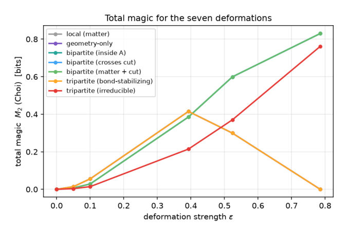
<figcaption class="paper-figure-caption"><b>Fig 4.</b> Figure 4. Total stabilizer R´enyi magic of the Choi state. At the comparison coupling it is nonzero for deformations with and without boundary response and therefore does not discriminate the two classes.</figcaption>
</figure>
<figure class="paper-figure-card">
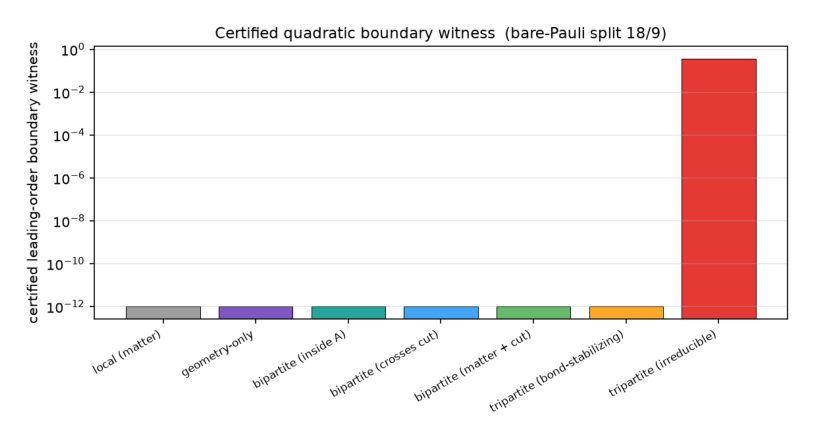
<figcaption class="paper-figure-caption"><b>Fig 5.</b> Figure 5. Certified quadratic boundary witness for the seven deformations. Only the bond-moving case is positive. Exact zero values are displayed at the 10−12 plotting floor; the title also records the bare Pauli 18/9 split.</figcaption>
</figure>
</div>

<p><strong>Summary.</strong> The paper develops and applies a certified boundary witness to analyze state-dependent proto-area within a four-qubit holographic code. It rigorously demonstrates that only matter-controlled bond motion causes the boundary entropy to depend on the logical state, providing a concrete, quantifiable signature for non-trivial quantum resource behavior.</p>
<p><strong>Why it may be interesting.</strong> This work connects abstract concepts from quantum information theory (resource theories, entanglement measures) directly to geometric properties derived from holographic duality, providing a concrete computational test for gravitational principles in a finite setting.</p>
<details>
<summary>Detailed structure</summary>
<p><strong>Main problem.</strong> The study aims to find a certified boundary witness for detecting state-dependent proto-area in holographic quantum codes, specifically identifying which nonlocal deformation causes the boundary entropy to depend on the logical state.</p>
<p><strong>Main result.</strong> Only the matter-controlled bond motion deformation yields a leading quadratic logical-state dependence of the boundary entropy ($\Delta_q S(A) > 0$), establishing a finite-code witness that is not universal.</p>
<p><strong>Method.</strong> The analysis employs advanced quantum information diagnostics, including calculating recovery-conditioned variational proto-area, maximizing entanglement fidelity via SDPs, and deriving a leading-order boundary witness by projecting the stabilizer-Rényi quadratic form.</p>
<p><strong>Model / system.</strong> The system is modeled using a four-qubit product-EPR holographic code involving reference, matter, and geometry bonds. Seven specific deformations are analyzed by controlling Hamiltonians acting on these components.</p>
<p><strong>Key observables.</strong> Boundary entropy ($S(A)$), single-leg geometry entropy ($S(	ext{Ga})$), entanglement fidelity ($    ext{Fe}$), coherent information ($I_c$), and the certified boundary witness ($W_{\partial}$).</p>
<p><strong>Important parameters / regimes.</strong> The deformation strength parameter $\epsilon$, and the logical state dependence parameter $q$.</p>
<p><strong>Assumptions / limitations.</strong> The results are restricted to a finite holographic-code model, meaning they establish a 'finite-code witness' rather than a universal law for continuum gravity.</p>
<p><strong>Figures summary.</strong> Figures illustrate that only the bond-moving deformation yields a positive boundary response ($\Delta_q S(A)$) in the witness calculation (Figure 5), while comparison families remain flat. Structural extensions show non-zero residuals when compared to ideal partitions.</p>
<p><strong>Paper structure.</strong> The paper systematically analyzes seven deformations using multiple diagnostics (entropy, fidelity, witnesses). It first establishes the state dependence via entropy measurements, then refines this detection using the boundary witness $W_{\partial}$, and finally tests structural robustness by extending the code model to two bonds.</p>
</details>
<details>
<summary>Abstract</summary>
<p>We study a four-qubit product-EPR holographic code whose reconstructing region contains matter and one leg of a geometry bond. Seven deformations compare local, bipartite, bond-stabilizing, and bond-moving operators. Exact spectra show that only matter-controlled bond motion produces a leading quadratic logical-state dependence of the boundary entropy. We select one state-independent physical recovery by optimizing coherent information of the channel Choi state. A separate semidefinite program maximizes entanglement fidelity over all channels. At fixed coupling the physical recovery attains that optimum to numerical precision, while recovered-entropy subtraction leaves a nonzero variational proto-area response. Total stabilizer Renyi magic is also nonzero for deformations with no boundary response, so it does not characterize the effect. Projecting the exact stabilizer-Renyi quadratic form away from pairwise Pauli tangents defines a leading-order boundary witness. Its global convex minimum is positive for the bond-moving deformation and zero for the six comparisons. For the reference-matter-geometry resource partition, however, pairwise tangents span the full projective tangent space at the product-EPR base, so the witness vanishes for every Hermitian deformation. A two-bound extension retains this degeneracy but exhibits a split-geometry structural residual and a logical-state-dependent cut switch. These results establish a finite-code witness, not a universal magic law or continuum gravitational dynamics.</p>
</details>
<p><sub><a href="#top">↑ back to top</a></sub></p>

<p><a id="paper-2607.10273"></a></p>
<h3 id="certified-quantum-supremacy-in-entanglement-assisted-prepare-measure-random-access-code"><a href="http://arxiv.org/abs/2607.10273v1">Certified quantum supremacy in entanglement-assisted prepare-measure random-access-code</a></h3>
<p><strong>Authors:</strong> Rajdeep Paul, Prabuddha Roy, A. K. Pan<br>
<strong>Type:</strong> theory · <strong>Category:</strong> quantum information and computing · <strong>PDF:</strong> <a href="https://arxiv.org/pdf/2607.10273v1">https://arxiv.org/pdf/2607.10273v1</a><br>
<strong>Analysis basis:</strong> full PDF text, analyzed in chunks
<strong>Topic relevance:</strong> 🔥 <code>entanglement &amp; information structure</code> <strong>4/5</strong> · <code>quantum measurements</code> <strong>2/5</strong> · <code>Keldysh / 2PI / non-Gaussian methods</code> <strong>1/5</strong> · <code>non-equilibrium dynamics</code> <strong>1/5</strong></p>
<div class="figure-strip-hint">↔ Scroll figures horizontally</div>
<div class="paper-figures-scroll">
<figure class="paper-figure-card">
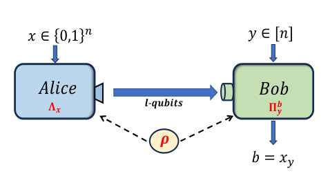
<figcaption class="paper-figure-caption"><b>Fig 1.</b> FIG. 1. Entanglement-assisted quantum PMRAC: Alice and Bob share a quantum state ρ. Alice performs quantum channel operation Λx on her qubit given input x ∈{0, 1}n and transmits it to Bob, who performs projective measurement Πb y on both qubits and produces a binary outcome.</figcaption>
</figure>
<figure class="paper-figure-card">
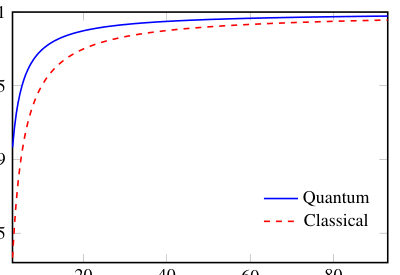
<figcaption class="paper-figure-caption"><b>Fig 2.</b> FIG. 2. The Graph depicts how the quantum success probabil- ity changes with the number of settings (n) of an n →n −2 entanglement-assisted PMRAC.</figcaption>
</figure>
</div>

<p><strong>Summary.</strong> This paper analyzes entanglement-assisted prepare-measure random-access codes (PMRAC) to establish new benchmarks for quantum communication. By deriving optimal success probabilities for specific code parameters, the authors demonstrate clear quantum advantages over classical and standard quantum protocols. The work is significant for quantifying the power of shared entanglement in quantum information tasks.</p>
<p><strong>Why it may be interesting.</strong> This work provides rigorous theoretical bounds on quantum communication tasks using entanglement assistance, which is fundamental knowledge for understanding resource theories in quantum information.</p>
<details>
<summary>Detailed structure</summary>
<p><strong>Main problem.</strong> The research develops a framework to study entanglement-assisted prepare-measure random-access codes (PMRAC) to demonstrate quantum supremacy over classical and standard quantum limits.</p>
<p><strong>Main result.</strong> The optimal quantum success probabilities for specific cases ($4	o 1$, $5	o 3$) are derived, showing clear advantages over classical bounds and certifying structural properties of the shared entangled state.</p>
<p><strong>Method.</strong> The authors use analytical techniques involving optimization of correlation functions (e.g., using convex inequalities) applied to density matrices describing quantum communication protocols.</p>
<p><strong>Model / system.</strong> The model involves two parties, Alice and Bob, sharing a prior bipartite entangled state ($
ho$). Alice encodes an input string $x \in \{0, 1\}^n$ via local unitaries and sends $l$ qubits to Bob for measurement.</p>
<p><strong>Key observables.</strong> Quantum success probability ($P^Q$), classical success probability ($P^C$), and standard quantum PMRAC success probability ($P^{SQ}$).</p>
<p><strong>Important parameters / regimes.</strong> $n$: Input string length (e.g., 4, 5); $l$: Number of communicated qubits ($l < n$).</p>
<p><strong>Assumptions / limitations.</strong> The analysis often relies on achieving maximum bounds by setting specific trace terms to zero or assuming the optimal state is maximally entangled.</p>
<p><strong>Figures summary.</strong> Figure 1 illustrates the general setup for the entanglement-assisted quantum PMRAC protocol.</p>
<p><strong>Paper structure.</strong> The paper proceeds by first establishing the general framework, then deriving explicit optimal probabilities and certifying properties for small cases ($4	o l$), followed by extending the analysis to higher dimensions ($5	o l$) and arbitrary $n 	o n-2$.</p>
</details>
<details>
<summary>Abstract</summary>
<p>We develop a family of semi-device-independent (SDI) entanglement-assisted prepare-measure (PM) communication games involving two parties, within the $n\rightarrow l$ random-access code (RAC) framework where the sender Alice holds a n-bit string and communicates $l<n$ bits or qubits to the receiver Bob. In contrast to the standard quantum PMRAC, here the parties share a prior entanglement, and Alice applies quantum operations on her sub-system to encode her inputs and sends to Bob. We first consider the $4\rightarrow l$ entanglement-assisted PMRAC with $l=1$ and $2$ and derive the optimal quantum success probabilities using an elegant analytical technique. We demonstrate quantum supremacy over both classical RACs and conventional quantum PMRACs. Moreover, we exhibit that the optimal quantum advantage allows one to certify Alice's unitary operations. We then derive an upper bound on the quantum success probabilities for $5\rightarrow l$ entanglement-assisted PMRAC with $l=1,2$ and $3$. Further, we extend the demonstration of quantum advantage for $n\rightarrow n-2$ case where n is arbitrary.</p>
</details>
<p><sub><a href="#top">↑ back to top</a></sub></p>

<p><a id="paper-2607.11252"></a></p>
<h3 id="deployment-of-entanglement-based-qkd-in-financial-infrastructure"><a href="http://arxiv.org/abs/2607.11252v1">Deployment of Entanglement-Based QKD in Financial Infrastructure</a></h3>
<p><strong>Authors:</strong> Mirela Selimović, Roman Solar, Jonathan Gruner, Sebastian Mair, Mario Wenzl, Thomas Heine, Matej Pivoluska, Rupert Ursin, Sebastian Philipp Neumann<br>
<strong>Type:</strong> experiment · <strong>Category:</strong> quantum information and computing · <strong>PDF:</strong> <a href="https://arxiv.org/pdf/2607.11252v1">https://arxiv.org/pdf/2607.11252v1</a><br>
<strong>Analysis basis:</strong> full PDF text, analyzed in chunks
<strong>Topic relevance:</strong> 🔥 <code>QC/QI experiment</code> <strong>4/5</strong> · <code>quantum optics experiment</code> <strong>3/5</strong> · <code>quantum measurements</code> <strong>1/5</strong></p>
<div class="figure-strip-hint">↔ Scroll figures horizontally</div>
<div class="paper-figures-scroll">
<figure class="paper-figure-card">
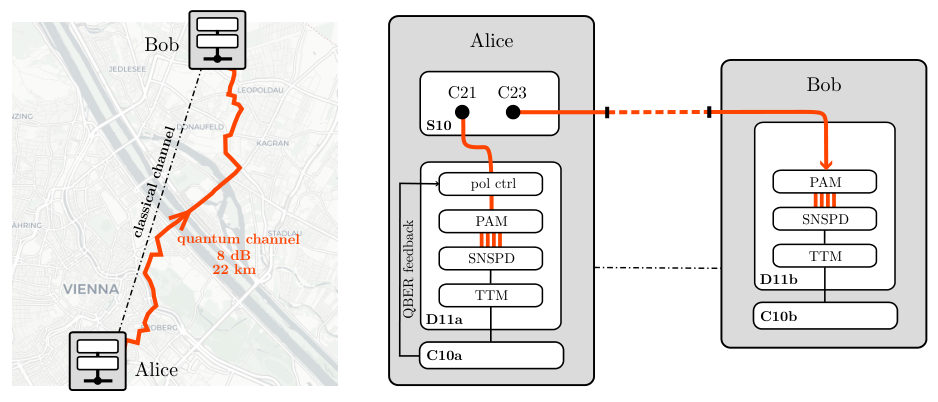
<figcaption class="paper-figure-caption"><b>Fig 1.</b> FIG. 1: Schematic of entanglement-based QKD operation over a deployed fiber link between two Viennese data centers of a financial institution. (a) Map showing the geographical locations of the data centers, Alice and Bob, connected by a fiber link with an overall loss of 8 dB. (The red line is for illustration only and does not represent the actual fiber deployment.) (b) Point-to-point connection: Alice is co-located with the entangled photon-pair source (S10), while Bob is connected via the deployed fiber link (quantum channel). The detection modules (D11a and D11b) at both communication partners are identical, except that Alice’s module includes a polarization control module (pol ctrl)...</figcaption>
</figure>
<figure class="paper-figure-card">
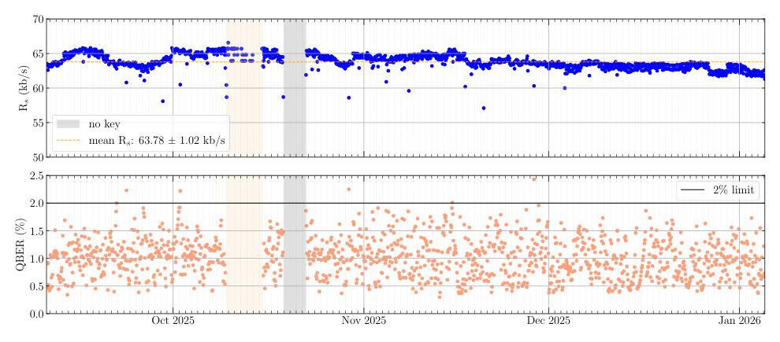
<figcaption class="paper-figure-caption"><b>Fig 2.</b> FIG. 2: Operation of entanglement-based QKD system in financial infrastructure over 2800 h (4 months) The system had an up-time of about 93.7 %. Top: Secure key rate over the measurement period 63.78± 1.02 kb/s on average. The gray shaded region indicates a three-day interval without key creation due to a test power outage. The yellow shaded region marks an eight-day period of unstable operation following changes in the network configuration in the data center. These changes resulted in a temporarily reduced up-time of 44 %; also, QBER values were not recorded during this time. The secure key rate Rs decreases below the long-term average of the operational period; this is attributable to...</figcaption>
</figure>
<figure class="paper-figure-card">
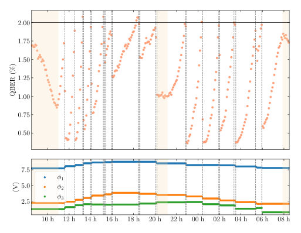
<figcaption class="paper-figure-caption"><b>Fig 3.</b> FIG. 3: Polarization rotation over a full day of operation in deployed fiber link. The top panel shows the quantum bit error rate (QBER) as a function of time over one typical day of operation. Shaded regions indicate intervals where the QBER drifted in a favorable direction without intervention, while dashed lines mark instances where the polarization control algorithm is initiated to actively reduce the QBER. The algorithm is initiated once the QBER reaches ≥2 % (black horizontal line). The bottom panel displays the corresponding evolution of the three input voltages ϕ1, ϕ2 and ϕ3 of the polarization controller.</figcaption>
</figure>
<figure class="paper-figure-card">
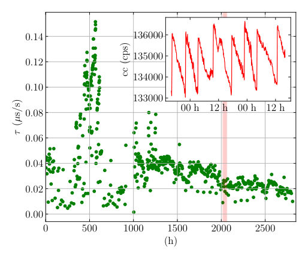
<figcaption class="paper-figure-caption"><b>Fig 4.</b> FIG. 4: Relative clock drift rate over four months of continuous operation. The graph shows the relative time drift rate, τ (µs/s), over the course of operation, resulting from the independent drift of the time-tagging clocks. The inset plot shows the coincidence count rate over two days of operation (red shaded region in main plot). Whenever the time drift reaches 500 µs, a re-synchronization event is initiated, resulting in a higher coincidence count rate and a sawtooth pattern.</figcaption>
</figure>
</div>

<p><strong>Summary.</strong> The paper reports on the successful real-world implementation of entanglement-based Quantum Key Distribution (eQKD) over a 22 km fiber link connecting two data centers. By integrating active polarization control and robust error correction protocols, the system maintained high key generation rates and uptime for months. This demonstrates a significant step toward deploying quantum security measures in commercial financial infrastructure.</p>
<p><strong>Why it may be interesting.</strong> This work provides a concrete engineering demonstration of quantum key distribution outside of controlled lab settings, directly addressing the deployment challenges for quantum technologies in critical infrastructure.</p>
<details>
<summary>Detailed structure</summary>
<p><strong>Main problem.</strong> The primary goal was demonstrating the practical feasibility of entanglement-based Quantum Key Distribution (eQKD) within a high-security, real-world financial data center infrastructure.</p>
<p><strong>Main result.</strong> The system successfully achieved stable key generation rates (average 63.8 kb/s) and maintained high uptime (93.7%) over four months of continuous operation on a 22 km fiber link.</p>
<p><strong>Method.</strong> The authors employed the BBM92 protocol using polarization-entangled photon pairs generated via SPDC, incorporating active feedback loops for polarization drift compensation and advanced post-processing techniques like LDPC error correction and privacy amplification.</p>
<p><strong>Model / system.</strong> The physical platform is an eQKD system transmitting quantum states over a 22 km standard optical fiber link between two data centers. Key components include Polarization Analysis Modules (PAMs), superconducting detectors, and active polarization controllers that compensate for environmental birefringence changes.</p>
<p><strong>Key observables.</strong> Average secure key rate ($\approx 63.8$ kb/s); Quantum Bit Error Rate (QBER) maintained below $2\%$ for over $97\%$ of the time; Timing precision achieved was sub-300 ps.</p>
<p><strong>Important parameters / regimes.</strong> Fiber loss of 8 dB over 22 km; Operational duration of four months; QBER threshold used for control ($\ge 2\%$).</p>
<p><strong>Assumptions / limitations.</strong> The system relies on active polarization control to counteract environmental perturbations, and the post-processing framework assumes certain efficiencies (e.g., equal detection efficiencies in both bases).</p>
<p><strong>Figures summary.</strong> Figures illustrate the point-to-point setup schematic, showing key rate stability over months, QBER evolution with compensation activity, and relative clock drift measurements over extended periods.</p>
<p><strong>Paper structure.</strong> The paper details the experimental setup (source, transmission link), describes the measurement protocols (basis choice, timing synchronization), outlines the complex post-processing chain (PE, EC via LDPC, PA), presents long-term performance data, and concludes with integration results into a live network environment.</p>
</details>
<details>
<summary>Abstract</summary>
<p>We demonstrate the feasibility of entanglement-based quantum key distribution (eQKD) in high-security financial infrastructure over a 22 km fiber link with 8 dB loss between two data centers using polarization entanglement. The fully automated system continuously generated secure keys for four months at an average rate of 63.8 kb/s, which were stored into a key management system and consumed to establish a VPN tunnel. The setup achieved 93.7% total up-time, with no downtime caused by the quantum optical components. Active polarization control kept the quantum bit error rate below 2% for 97.4% of the time and timing synchronization based on the entangled photon pairs' intrinsic temporal correlations achieved sub-300 ps precision. Our standalone system requires neither polarized guide lasers nor external high-precision time references. These results show practical integration of eQKD into operational financial infrastructure.</p>
</details>
<p><sub><a href="#top">↑ back to top</a></sub></p>

<p><a id="paper-2607.10799"></a></p>
<h3 id="quantum-enhanced-physical-layer-threat-detection-in-metropolitan-scale-fiber-networks"><a href="http://arxiv.org/abs/2607.10799v1">Quantum-enhanced physical-layer threat detection in metropolitan-scale fiber networks</a></h3>
<p><strong>Authors:</strong> Yung-Cheng Kao, Siddharth Pal, Alex Forencich, Dylan Cirimelli-Low, Chaohan Cui, Jack Postlewaite, Pao-Kang Chen, Nicola Alic, Saikat Guha, Prithwish Basu, Linran Fan<br>
<strong>Type:</strong> experiment · <strong>Category:</strong> quantum information and computing · <strong>PDF:</strong> <a href="https://arxiv.org/pdf/2607.10799v1">https://arxiv.org/pdf/2607.10799v1</a><br>
<strong>Analysis basis:</strong> full PDF text, analyzed in chunks
<strong>Topic relevance:</strong> 🔥 <code>quantum optics experiment</code> <strong>4/5</strong> · <code>quantum measurements</code> <strong>2/5</strong> · <code>QC/QI experiment</code> <strong>1/5</strong> · <code>interference shaping light</code> <strong>1/5</strong></p>
<div class="figure-strip-hint">↔ Scroll figures horizontally</div>
<div class="paper-figures-scroll">
<figure class="paper-figure-card">
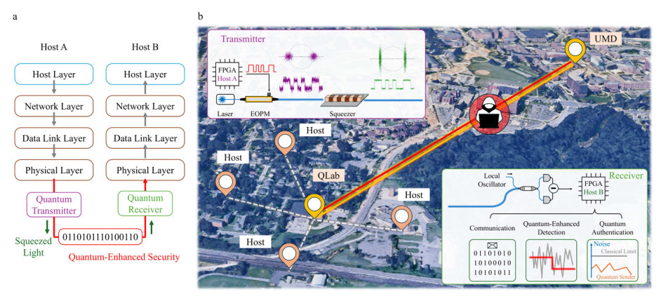
<figcaption class="paper-figure-caption"><b>Fig 1.</b> FIG. 1. Quantum-enhanced optical network a, Open system interconnection (OSI) model. A quantum trans- mitter and receiver are integrated at the physical layer with standard network interfaces. b, Field test of quantum- enhanced security in metropolitan-scale fiber network. Hosts located in QLab communicate through a deployed fiber network connecting QLab and UMD, with an optical switch in QLab enabling path reconfiguration. Upper left inset, schematic of the quantum transmitter. The signal light is generated by a single-frequency laser operating at around 1550 nm. Bits 0 and 1 are encoded using binary phase modulation with an electro-optic phase modulator (EOPM) driven by an FPGA on host...</figcaption>
</figure>
<figure class="paper-figure-card">
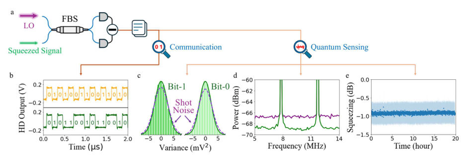
<figcaption class="paper-figure-caption"><b>Fig 2.</b> FIG. 2. Performance of quantum transmitters and receivers. a, Schematic of detection and data flow at the quantum receiver. b, Time-domain traces of decoded signals captured by the analog-to-digital converters (ADCs) with a sampling rate of 1GS/s. Idle sequence (orange) and pseudo random binary sequence (green) are shown in the top and bottom plots, respectively. c, Statistical distributions of homodyne output for bit-0 and bit-1 in the quantum (green) and classical (purple) cases, based on 80 million samples. The distributions are fitted with Gaussian functions to extract the variances and quantify the squeezing levels. d, Noise spectra of the homodyne signals for the quantum (green) and...</figcaption>
</figure>
<figure class="paper-figure-card">
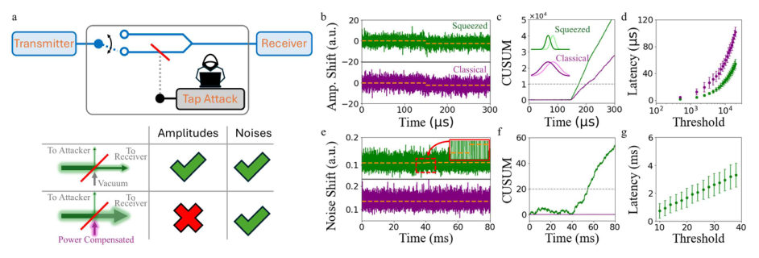
<figcaption class="paper-figure-caption"><b>Fig 3.</b> FIG. 3. Performance of detecting tapping attacks a, Schematic of the tapping attack, where an eavesdropper extracts a fraction of the optical power between network nodes. Two representative attack strategies are illustrated. Without power compensation, tapping attacks can be detected by monitoring quadrature amplitudes or noise. With power compensation, tapping attacks can only be detected through analyzing the noise property of non-classical signals. b, Time-domain traces of quadrature amplitudes during the tapping attack test. Mean values are indicated by orange dashed lines. c, Amplitude-based CUSUM outputs. An alarm is triggered when the output exceeds a predefined threshold (gray line)....</figcaption>
</figure>
<figure class="paper-figure-card">
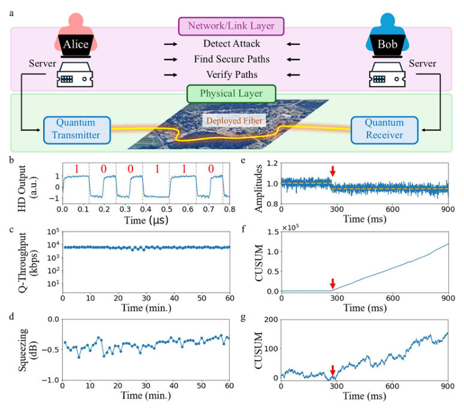
<figcaption class="paper-figure-caption"><b>Fig 4.</b> FIG. 4. Field test of the quantum network a, Schematic of the quantum-network field trial. High-layer function- alities are managed by the host server, wheres quantum operation are implemented at the physical layer through a deployed fiber. b, Time-domain trace of the received homodyne signal encoded using differential Manchester (DME) after transmission through a 5-km deployed fiber loopback. c, Measured throughput of the quantum-enhanced chan- nel, characterized using TCP iPerf between Alice and Bob. d, Measured squeezing level during the field trial. e, Measured amplitudes trace with a 10 % tapping event introduced at approximately 300 ms, as indicated by the arrow. f, Amplitude-based CUSUM...</figcaption>
</figure>
<figure class="paper-figure-card">
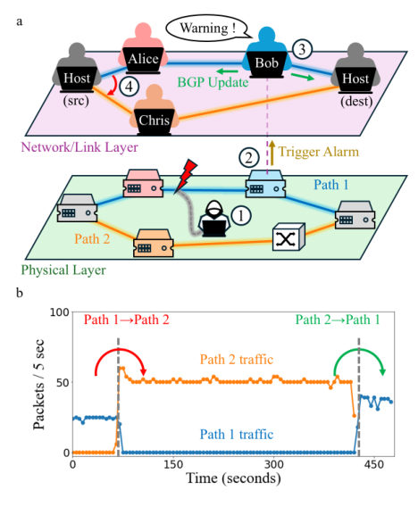
<figcaption class="paper-figure-caption"><b>Fig 5.</b> FIG. 5. Network rerouting in a quantum- enhanced network a, Schematic of the rerouting demonstration. Upon threat detection at the physical layer, an alarm is triggered and initiates a BGP update to redirect traffic from the primary path to an alternative secure path in upper layers. b, Monitored data rate dur- ing the rerouting demonstration. Following threat de- tection, traffic is switched from the primary path (blue) to an alternative secure route (orange), resulting in a corresponding change in the measured data rate. Once the threat is removed, traffic is restored to the original route.</figcaption>
</figure>
</div>

<p><strong>Summary.</strong> The paper presents a scalable method for enhancing network security by embedding quantum features into the physical layer of fiber optic communications using bright squeezed light. By analyzing both the amplitude and the noise variance of the signal via CUSUM methods, they demonstrate superior detection capabilities against sophisticated optical tapping attacks compared to classical systems. This allows for seamless integration of quantum-enhanced security into existing metropolitan communication networks.</p>
<p><strong>Why it may be interesting.</strong> This work directly addresses quantum networking applications at the physical layer, utilizing advanced quantum optics techniques (squeezing) combined with classical signal processing (CUSUM) for security monitoring, which is highly relevant to quantum communication infrastructure development.</p>
<details>
<summary>Detailed structure</summary>
<p><strong>Main problem.</strong> To overcome scalability limitations in quantum-enhanced network security protocols that require complex cross-layer dependencies, which conflict with modern modular network architectures.</p>
<p><strong>Main result.</strong> The authors established a practical framework by confining all quantum interventions to the physical layer using bright squeezed light, enabling seamless integration into large-scale communication infrastructure.</p>
<p><strong>Method.</strong> They use Coherent Homodyne Detection and analyze signals via the Cumulative Sum (CUSUM) method applied to both amplitude and noise spectral density to detect optical tapping attacks.</p>
<p><strong>Model / system.</strong> The system is implemented over a metropolitan-scale fiber network, embedding quantum features within the same optical field as classical data using bright squeezed light generated via an Optical Parametric Amplifier. The detection mechanism relies on monitoring changes in quantum variance, which are altered by taps even when power compensation is applied.</p>
<p><strong>Key observables.</strong> Variance reduction below the shot-noise limit; CUSUM statistics ($S^+$ and $S^-$) derived from amplitude and noise spectral density measurements.</p>
<p><strong>Important parameters / regimes.</strong> Metropolitan-scale fiber network deployment; Squeezing levels (e.g., 24% variance reduction); Detection latency.</p>
<p><strong>Assumptions / limitations.</strong> The method assumes that monitoring the noise property of non-classical light is necessary to detect sophisticated tapping attacks, even those employing classical power compensation techniques.</p>
<p><strong>Figures summary.</strong> Figures illustrate the quantum-enhanced optical network integration into the OSI model and field test setups. They show performance metrics comparing quantum vs. classical variances, demonstrating successful tap detection using CUSUM methods in a deployed link, and finally showing the automated BGP rerouting upon physical layer threat detection.</p>
<p><strong>Paper structure.</strong> The paper first introduces the problem of cross-layer dependencies, proposes confining quantum interventions to the physical layer via squeezed light embedding. It details the experimental setup (squeezing generation, homodyne detection) and then focuses on the CUSUM analysis for detecting taps by monitoring both amplitude and noise variance in a field test, culminating in demonstrating network-level response via BGP updates.</p>
</details>
<details>
<summary>Abstract</summary>
<p>Network security is widely recognized as a key application of quantum technology. However, its large-scale deployment is hindered by the need for tight coordination between fundamentally different quantum and classical processing steps in conventional protocols. This requirement introduces strong cross-layer interdependencies that conflict with the modular, layered architectures enabling scalability in modern communication networks. Here, we present an alternative strategy that confines all quantum interventions to the physical layer and remains transparently compatible with existing network abstractions. This is achieved by directly embedding quantum features and classical information within the same optical field using bright squeezed light. Physical-layer signals are analyzed using a cumulative sum (CUSUM) method to enable quantum-enhanced threat detection. We validate the practicality of this approach through field deployment over a metropolitan-scale fiber network and further demonstrate network-level security functionalities enabled by physical-layer quantum-enhanced thread detection. These results establish a practical, scalable framework for seamlessly integrating quantum-enhanced security into large-scale communication infrastructure.</p>
</details>
<p><sub><a href="#top">↑ back to top</a></sub></p>

<p><a id="paper-2607.11668"></a></p>
<h3 id="multi-stage-mamba-based-architecture-for-fast-and-scalable-superconducting-qubit-readout"><a href="http://arxiv.org/abs/2607.11668v1">Multi-Stage Mamba-Based Architecture for Fast and Scalable Superconducting Qubit Readout</a></h3>
<p><strong>Authors:</strong> Luca Otting, Xiaorang Guo, Emmanouil Giortamis, Benjamin Lienhard, Pramod Bhatotia, Martin Schulz<br>
<strong>Type:</strong> both · <strong>Category:</strong> quantum information and computing · <strong>PDF:</strong> <a href="https://arxiv.org/pdf/2607.11668v1">https://arxiv.org/pdf/2607.11668v1</a><br>
<strong>Analysis basis:</strong> full PDF text, analyzed in chunks
<strong>Topic relevance:</strong> 🔥 <code>QC/QI experiment</code> <strong>4/5</strong> · <code>quantum measurements</code> <strong>2/5</strong> · <code>methods for driven-dissipative</code> <strong>1/5</strong></p>
<div class="figure-strip-hint">↔ Scroll figures horizontally</div>
<div class="paper-figures-scroll">
<figure class="paper-figure-card">
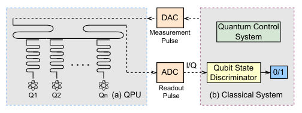
<figcaption class="paper-figure-caption"><b>Fig 1.</b> Fig. 1. Readout pipeline of superconducting qubits. (a) On the QPUs side, the readout begins with a microwave pulse generated by the signal generator, then produces readout pulses that carry the qubit-state information. (b) On the classical side, the output signals are digitized into I/Q traces, which are then processed to determine the qubit states.</figcaption>
</figure>
<figure class="paper-figure-card">
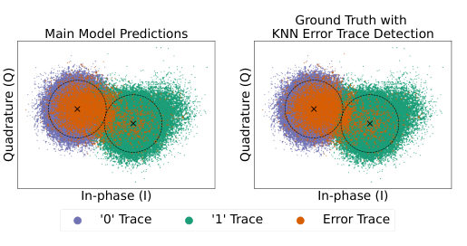
<figcaption class="paper-figure-caption"><b>Fig 2.</b> Fig. 3. Comparison between the main model’s predicted trace clusters (left) and the pseudo-ground-truth labels obtained from the KNN-based error detector (right).</figcaption>
</figure>
<figure class="paper-figure-card">
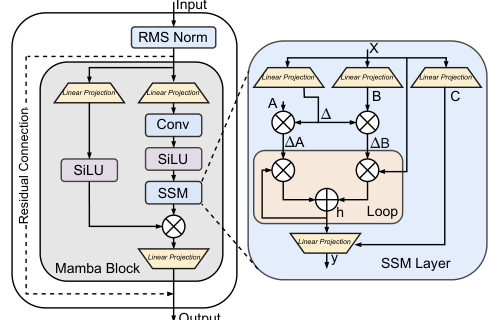
<figcaption class="paper-figure-caption"><b>Fig 3.</b> Fig. 2. The basic structure of Mamba Model and its internal SSM layer. The input is normalized and processed by a convolutional layer, followed by an SSM layer that performs sequence modeling through recurrent hidden-state (h) updates using learnable matrices A, B, and C. A residual connection merges the input and output of SSM to form the final result.</figcaption>
</figure>
<figure class="paper-figure-card">
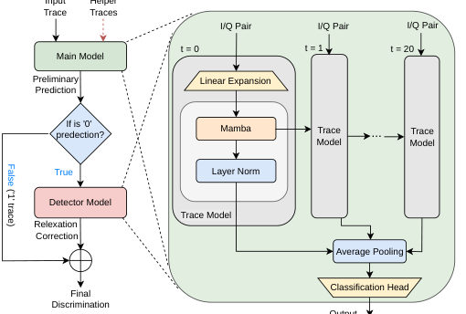
<figcaption class="paper-figure-caption"><b>Fig 4.</b> Fig. 4. Architecture of the proposed multi-stage discriminator. The multi- stage workflow is shown on the left, while the right part illustrates the detailed Mamba architecture used in both the main classifier and the error detector.</figcaption>
</figure>
<figure class="paper-figure-card">
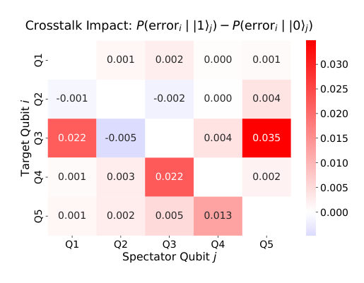
<figcaption class="paper-figure-caption"><b>Fig 5.</b> Fig. 5. The heatmap illustrates the difference in error probability on a target qubit i conditioned on the prepared state of a spectator qubit j. Positive values (red) indicate a higher error rate on qubit i when qubit j is prepared in the |1⟩state compared to the |0⟩state.</figcaption>
</figure>
</div>

<p><strong>Summary.</strong> This paper introduces a novel, multi-stage qubit state discriminator built on the Mamba architecture to overcome readout bottlenecks in superconducting quantum processors. By achieving linear complexity and integrating error correction into the model, it significantly boosts readout fidelity and reduces logical errors compared to existing methods. This advancement is vital for realizing scalable fault-tolerant quantum computation.</p>
<p><strong>Why it may be interesting.</strong> The work directly addresses hardware limitations in quantum computing by proposing a computationally efficient ML model to improve the fundamental measurement process (readout), which is crucial for scaling up any quantum simulation or algorithm.</p>
<details>
<summary>Detailed structure</summary>
<p><strong>Main problem.</strong> Reliable qubit readout is a critical bottleneck for fault-tolerant quantum computing due to high error rates, latency, and signal crosstalk in multiplexed superconducting architectures.</p>
<p><strong>Main result.</strong> The proposed Mamba-based discriminator achieves a geometric mean readout fidelity of 0.906 (optimal: 0.911) while significantly reducing model size and achieving up to a 26% reduction in logical error rate for QEC.</p>
<p><strong>Method.</strong> A multi-stage state discriminator is implemented using the Mamba architecture, which processes I/Q digitized traces with linear complexity, followed by an integrated error detection stage.</p>
<p><strong>Model / system.</strong> The system involves superconducting qubits read out via resonators, generating analog I/Q signals. The model uses a Multi-Stage Mamba architecture to process these time-series traces for single-qubit state discrimination.</p>
<p><strong>Key observables.</strong> Readout fidelity (geometric mean), logical error rate reduction in QEC, and parameter size relative to prior FNN methods.</p>
<p><strong>Important parameters / regimes.</strong> Short readout durations ($  ext{500 ns}$), crosstalk levels in frequency-multiplexed systems, and the required accuracy for fault tolerance.</p>
<p><strong>Assumptions / limitations.</strong> The primary assumption is that an efficient sequence model (Mamba) can jointly address state discrimination and relaxation errors better than traditional FNNs.</p>
<p><strong>Figures summary.</strong> Figures illustrate the readout pipeline from microwave pulse to classical processing, detailing the multi-stage discriminator architecture flow between the main classification model and the error detector.</p>
<p><strong>Paper structure.</strong> The paper first establishes the bottleneck of qubit readout in FTQC. It then introduces the Mamba-based multi-stage discriminator, detailing its two stages (initial discrimination and error refinement). Finally, it presents quantitative results comparing fidelity and logical error rate reduction against state-of-the-art methods.</p>
</details>
<details>
<summary>Abstract</summary>
<p>Reliable qubit readout is a critical bottleneck toward fault-tolerant quantum computing (FTQC). In superconducting quantum processors, readout operations are both error-prone and high-latency. These challenges become more severe in frequency-multiplexed architectures, where signal crosstalk among neighboring qubits significantly degrades readout fidelity. Existing machine learning (ML)-based approaches rely on feed-forward neural networks (FNNs) that suffer from large parameter sizes and lack an end-to-end network that jointly addresses relaxation errors and discriminates qubit states.   In this work, we present a multi-stage qubit state discriminator based on the Mamba model, which enables efficient sequence modeling with linear complexity. The first stage performs initial state discrimination, followed by a refinement stage that identifies and mitigates relaxation-induced errors. Our lightweight model achieves a geometric mean readout fidelity of 0.906, outperforming the best-reported state-of-the-art method while reducing parameter size by 49.6%; our optimal model further reaches 0.911. Both models remain robust across varying input trace lengths, maintaining a high fidelity of 0.893 at readout durations as short as 500 $ns$, achieving up to a 26% reduction in logical error rate over prior work in quantum error correction (QEC).</p>
</details>
<p><sub><a href="#top">↑ back to top</a></sub></p>

<p><a id="paper-2607.11514"></a></p>
<h3 id="states-dressing-analysis-in-a-transmon-transmon-bus-system"><a href="http://arxiv.org/abs/2607.11514v1">States dressing analysis in a transmon-transmon-bus system</a></h3>
<p><strong>Authors:</strong> P. A. Gladilovich, R. A. Migdisov, A. V. Sabluk, P. S. Burtsev, N. N. Abramov, N. Y. Rudenko, V. I. Chichkov, N. A. Maleeva<br>
<strong>Type:</strong> both · <strong>Category:</strong> quantum information and computing · <strong>PDF:</strong> <a href="https://arxiv.org/pdf/2607.11514v1">https://arxiv.org/pdf/2607.11514v1</a><br>
<strong>Analysis basis:</strong> full PDF text, analyzed in chunks
<strong>Topic relevance:</strong> 🔥 <code>QC/QI experiment</code> <strong>4/5</strong> · <code>correlated / nonlocal dissipation</code> <strong>1/5</strong> · <code>driven-dissipative phase transition</code> <strong>1/5</strong> · <code>methods for driven-dissipative</code> <strong>1/5</strong></p>
<div class="figure-strip-hint">↔ Scroll figures horizontally</div>
<div class="paper-figures-scroll">
<figure class="paper-figure-card">
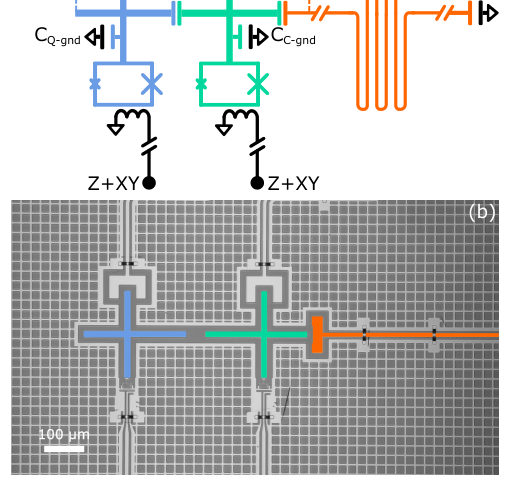
<figcaption class="paper-figure-caption"><b>Fig 1.</b> FIG. 1. (a) Circuit diagram and (b) false-colored optical mi- crograph of the system. The qubit (Q) is shown in blue, the coupler (C) in green, and the half-wavelength resonator (bus) in orange. The individual readout λ/4 resonators are capac- itively coupled to Q and C and are shown in black. Both resonators are coupled to a coplanar in-out transmission line. The Z+XY lines for flux biasing and microwave driving are inductively coupled to the SQUIDs of Q and C.</figcaption>
</figure>
<figure class="paper-figure-card">
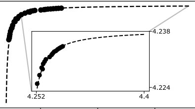
<figcaption class="paper-figure-caption"><b>Fig 2.</b> FIG. 2. Experimental data (points) and model data (dashed line) for the lower-mode frequency (L) as a function of the upper-mode frequency (U) of the C-bus subsystem under flux biasing of C. The inset shows the frequency region up to the critical value fU = f c U.</figcaption>
</figure>
<figure class="paper-figure-card">
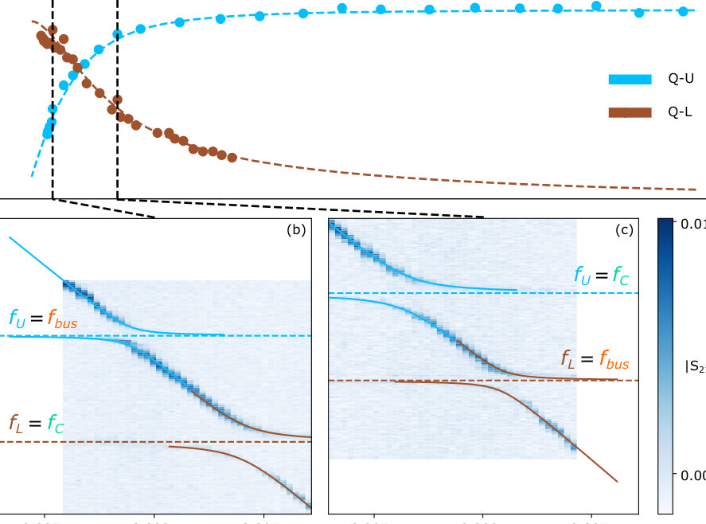
<figcaption class="paper-figure-caption"><b>Fig 3.</b> FIG. 3. Comparison of experimental and model data for the effective coupling of qubit Q to the upper (U) and lower (L) modes of the C-bus subsystem. (a) Effective couplings gQ−U eff (sky blue) and gQ−L eff (brown) as functions of the upper-mode frequency fU. Dashed lines show model data from Eq. (4), and points show experimental data. (b), (c) Examples of experimental and model spectra after (b) and before (c) inversion of the spectral order.</figcaption>
</figure>
<figure class="paper-figure-card">
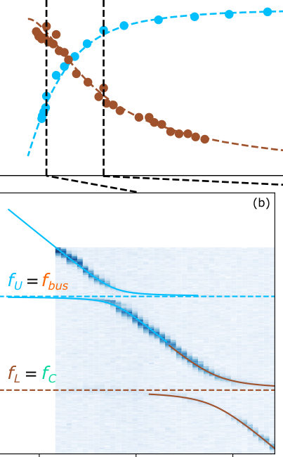
<figcaption class="paper-figure-caption"><b>Fig 4.</b> Figure 3(a) summarizes the experimental results. It shows gQ−L eff and gQ−U eff as functions of the upper-mode frequency fU. The data reveal two distinct frequency re- gions. In the high-frequency region, fU &gt; f c U ≈4.252</figcaption>
</figure>
<figure class="paper-figure-card">
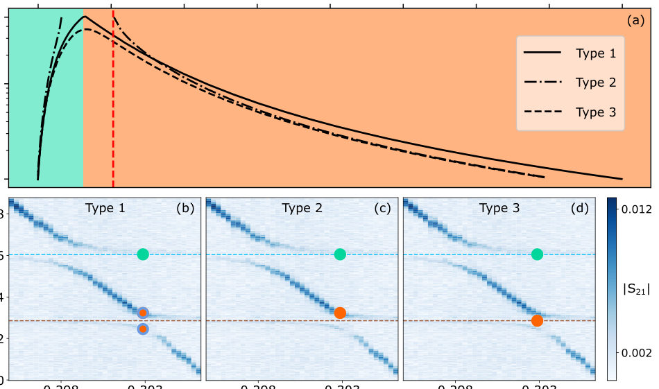
<figcaption class="paper-figure-caption"><b>Fig 5.</b> FIG. 4. Comparison of three methods for estimating the dressing D of resonant computational states |Q⟩and |L⟩. (a) D as a function of the upper-mode frequency fU, calculated in the full system (type 1, solid line), with an effective mode (type 2, dash-dotted line), and with an unperturbed mode (type 3, dashed line). The red dashed line marks the value of fU used to compare the three methods. The background colors show the regions where the dressed computational state |L⟩corresponds to the dressed state |bus⟩(orange) or |C⟩(green). (b–d) Spectra with schematic illustrations of the three methods: (b) the exact full-system method, (c) the effective-mode method, where the computational mode is...</figcaption>
</figure>
</div>

<p><strong>Summary.</strong> The research investigates state dressing—the contamination of desired computational states by unwanted higher-energy modes—in a transmon-transmon-bus quantum processor. By comparing three estimation methods (full, effective, unperturbed), the authors demonstrate that accurate characterization of this dressing is vital for optimizing gate fidelity. The findings emphasize that simple approximations fail near critical operating points, necessitating full system analysis.</p>
<p><strong>Why it may be interesting.</strong> This work provides concrete experimental and analytical guidance on mitigating decoherence sources in superconducting qubits by quantifying how non-computational states pollute the computational subspace, which is central to scaling quantum processors.</p>
<details>
<summary>Detailed structure</summary>
<p><strong>Main problem.</strong> The fidelity of multi-qubit gates in superconducting quantum processors is limited by the 'dressing' of computational states by unwanted noncomputational states.</p>
<p><strong>Main result.</strong> Accurate estimation and control of this state dressing are crucial for optimizing gate operations, as different theoretical methods yield varying estimates depending on the operating regime.</p>
<p><strong>Method.</strong> The study compares three distinct analytical/numerical methods—full-system calculation, effective mode approach, and unperturbed mode approach—to quantify the participation weight (dressing) of noncomputational states.</p>
<p><strong>Model / system.</strong> The system modeled is a transmon-transmon-bus superconducting quantum processor comprising a qubit (Q), a coupler (C), and a resonator bus. The analysis uses the full Hamiltonian describing these coupled elements.</p>
<p><strong>Key observables.</strong> Dressing weight ($D$), effective couplings ($g_{Q-U}^{	ext{eff}}$, $g_{Q-L}^{	ext{eff}}$), and mode frequencies ($f_U, f_L$).</p>
<p><strong>Important parameters / regimes.</strong> The critical point ($f_c^U$) where spectral ordering inverts and effective couplings become equal is a key parameter.</p>
<p><strong>Assumptions / limitations.</strong> The unperturbed-mode method is shown to underestimate the true dressing near the critical detuning, highlighting the need for full system characterization at operating points.</p>
<p><strong>Figures summary.</strong> Figures compare the three methods for estimating $D$ across varying frequencies ($f_U$), showing how the calculated dressing changes dramatically around a critical frequency region. Other figures map out effective couplings vs. mode frequencies.</p>
<p><strong>Paper structure.</strong> The paper establishes the problem of state dressing, details the physical transmon-bus model, and then systematically compares the results from three different theoretical estimation techniques (full, effective, unperturbed) across varying system parameters to determine the most reliable characterization method for gate optimization.</p>
</details>
<details>
<summary>Abstract</summary>
<p>The multi-qubit gates fidelity of superconducting quantum processors can be limited due to the dressing of computational states by noncomputational ones. Here, we experimentally and analytically investigate a transmon-transmon-bus system where the computational states dressing is tunable over a broad range. We estimate the dressing using three methods: a full three-element model, an effective mode approach, and an unperturbed mode approach. The obtained results highlight the importance of the accurate estimation and control of the computational states dressing in order to optimize gates on superconducting platform.</p>
</details>
<p><sub><a href="#top">↑ back to top</a></sub></p>

<p><a id="paper-2607.10249"></a></p>
<h3 id="branch-resolved-pauli-block-spectroscopy-of-residual-conditional-phase-in-two-qubit-gates"><a href="http://arxiv.org/abs/2607.10249v1">Branch-resolved Pauli-block spectroscopy of residual conditional phase in two-qubit gates</a></h3>
<p><strong>Authors:</strong> Xudan Chai, Yanwu Gu, Huiqi Xue, Kerui Li, Dong E. Liu<br>
<strong>Type:</strong> experiment · <strong>Category:</strong> quantum information and computing · <strong>PDF:</strong> <a href="https://arxiv.org/pdf/2607.10249v1">https://arxiv.org/pdf/2607.10249v1</a><br>
<strong>Analysis basis:</strong> full PDF text, analyzed in chunks
<strong>Topic relevance:</strong> 🔥 <code>QC/QI experiment</code> <strong>4/5</strong> · <code>quantum measurements</code> <strong>2/5</strong></p>
<div class="figure-strip-hint">↔ Scroll figures horizontally</div>
<div class="paper-figures-scroll">
<figure class="paper-figure-card">
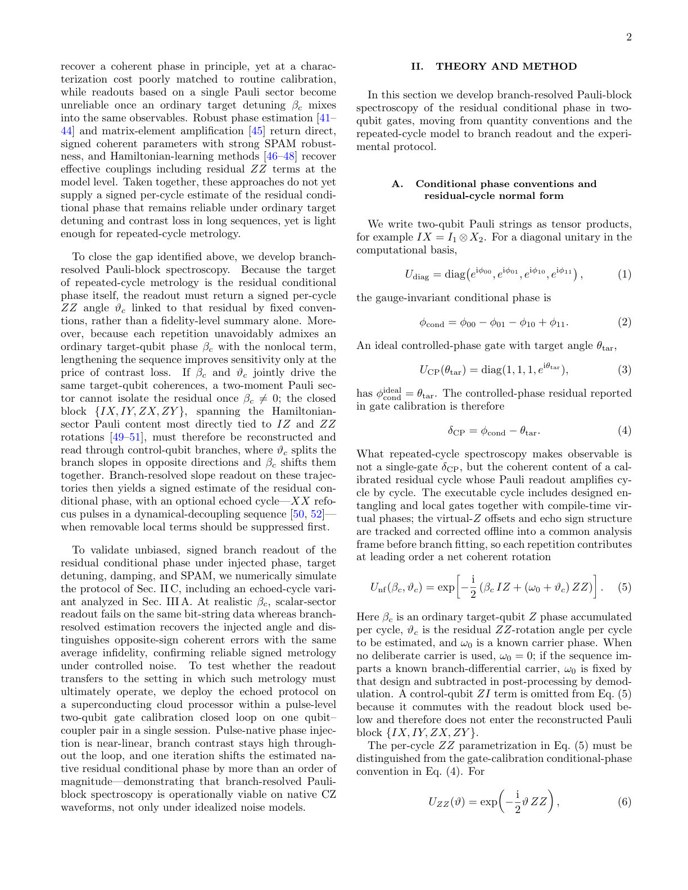
<figcaption class="paper-figure-caption"><b>Fig 1.</b> Low-resolution page preview, page 2</figcaption>
</figure>
<figure class="paper-figure-card">
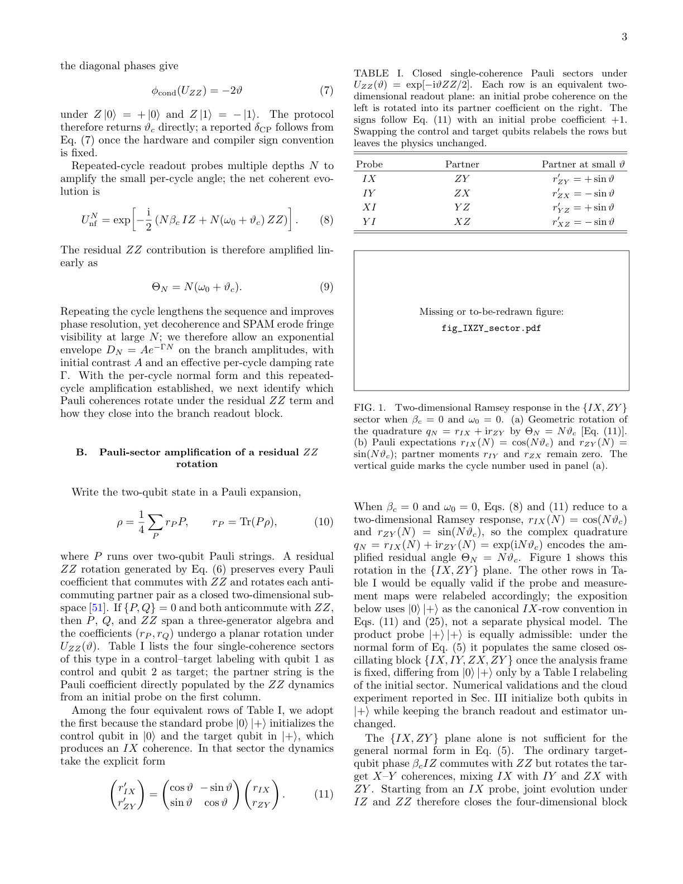
<figcaption class="paper-figure-caption"><b>Fig 2.</b> Low-resolution page preview, page 3</figcaption>
</figure>
<figure class="paper-figure-card">
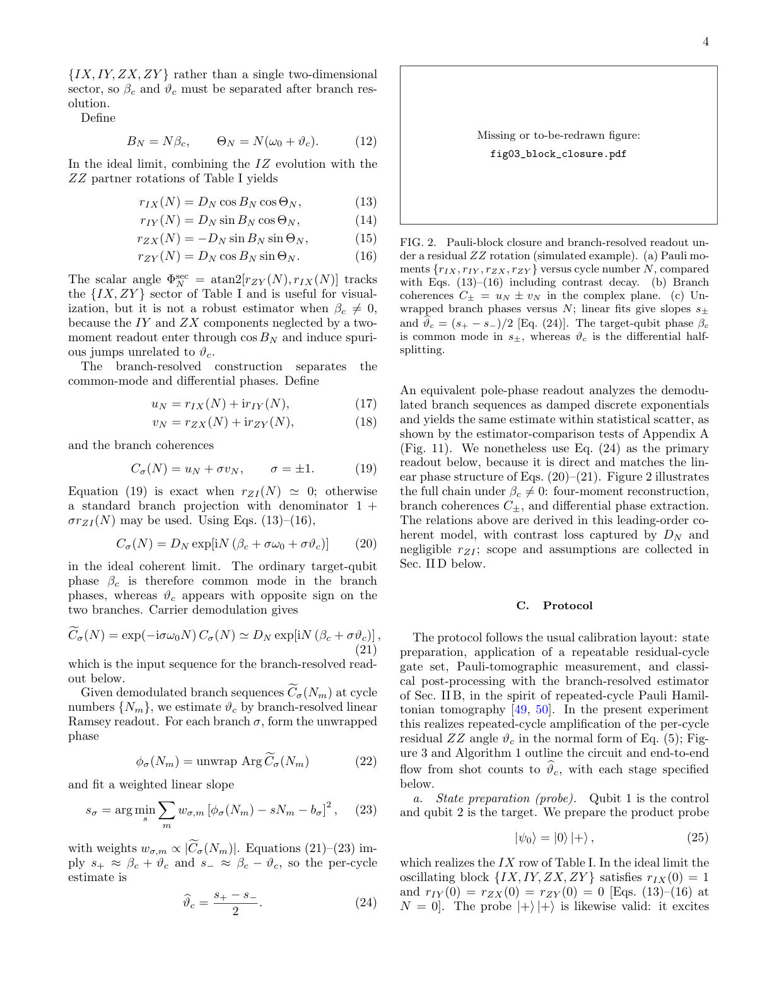
<figcaption class="paper-figure-caption"><b>Fig 3.</b> Low-resolution page preview, page 4</figcaption>
</figure>
<figure class="paper-figure-card">
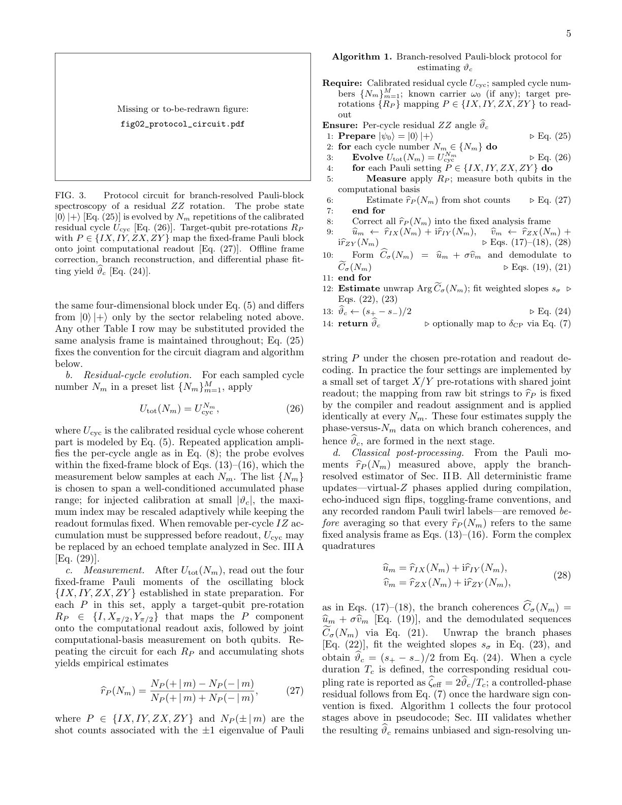
<figcaption class="paper-figure-caption"><b>Fig 4.</b> Low-resolution page preview, page 5</figcaption>
</figure>
<figure class="paper-figure-card">
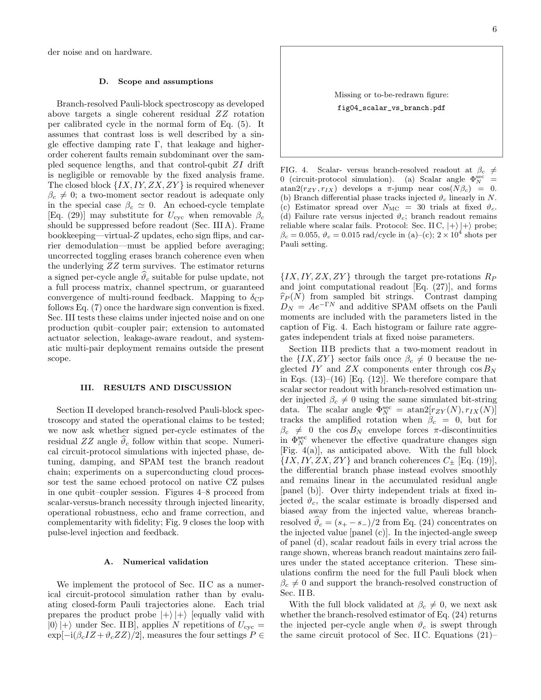
<figcaption class="paper-figure-caption"><b>Fig 5.</b> Low-resolution page preview, page 6</figcaption>
</figure>
</div>

<p><strong>Summary.</strong> The paper introduces branch-resolved Pauli-block spectroscopy to overcome limitations in calibrating residual conditional phases ($\vartheta_c$) in two-qubit gates. By measuring specific coherences derived from a closed Pauli block, the technique extracts a signed estimate of $\vartheta_c$, which is crucial because standard fidelity measurements are sign-blind. This method was successfully demonstrated on superconducting qubits, providing a low-overhead tool for active quantum control.</p>
<p><strong>Why it may be interesting.</strong> This work provides a concrete, high-precision metrology tool for characterizing fundamental gate errors in solid-state quantum hardware, directly addressing the primary bottleneck for fault-tolerant computation.</p>
<details>
<summary>Detailed structure</summary>
<p><strong>Main problem.</strong> Accurately calibrating the residual conditional phase ($\vartheta_c$) in two-qubit gates is critical for advancing quantum computation beyond the NISQ era.</p>
<p><strong>Main result.</strong> The authors developed a branch-resolved spectroscopy technique that yields a signed, per-cycle estimate of $\vartheta_c$, which standard fidelity benchmarks fail to resolve or distinguish from noise.</p>
<p><strong>Method.</strong> They employ Pauli-block spectroscopy by measuring specific coherences ($C_\pm$) derived from the closed Pauli block $\{IX, IY, ZX, ZY\}$ and fitting the resulting phase slopes to extract $\vartheta_c$.</p>
<p><strong>Model / system.</strong> The work is implemented on a superconducting cloud qubit-coupler pair, focusing on controlled-phase or CZ-style two-qubit gates. The dynamics are analyzed by tracking the evolution of Pauli moments.</p>
<p><strong>Key observables.</strong> Signed per-cycle residual ZZ-rotation angle ($\vartheta_c$), branch coherences ($C_\pm$), and gate fidelity ($F_{avg}$).</p>
<p><strong>Important parameters / regimes.</strong> The measurement is sensitive to $\vartheta_c$ (the target), the local detuning phase ($eta_c$), contrast decay ($\Gamma$), and noise sources like SPAM.</p>
<p><strong>Assumptions / limitations.</strong> The method relies on reconstructing the closed Pauli block $\{IX, IY, ZX, ZY\}$ and assumes that the differential measurement of branch coherences can separate $\vartheta_c$ from common-mode local errors ($eta_c$).</p>
<p><strong>Figures summary.</strong> Figures compare the sign-blind average gate infidelity against the signed estimate derived from branch readout, demonstrating the superior sensitivity of the proposed method.</p>
<p><strong>Paper structure.</strong> The paper introduces the physical problem (calibration difficulty), details the theoretical framework using Pauli expansion and defining branch coherences ($C_\pm$), presents the fitting procedure to extract $\vartheta_c$, validates this approach via numerical simulations under noise, and concludes with experimental demonstration on superconducting qubits showing successful closed-loop calibration.</p>
</details>
<details>
<summary>Abstract</summary>
<p>Recent progress in quantum physics and quantum technologies is driving quantum computing from the noisy intermediate-scale (NISQ) era toward fault-tolerant operation. High-precision control of two-qubit gates is among the most critical requirements in this transition and hinges on accurate two-qubit calibration. For controlled-phase and CZ-style operations, the residual conditional phase (the nonlocal ZZ-type deviation after local compensation) is weakly resolved at leading order in average infidelity and randomized benchmarking, and repeated Ramsey amplification does not reliably isolate it from ordinary target detuning, SPAM errors, and contrast loss in long sequences. We introduce branch-resolved Pauli-block spectroscopy to estimate the per-cycle residual ZZ-rotation angle theta_c with its sign, from which the controlled-phase residual follows by a fixed convention. The protocol repeats a fixed probe for N cycles, measures the closed Pauli block IX, IY, ZX, and ZY, and forms branch coherences C+ and C- conditioned on the control qubit; theta_c splits the two branch phase slopes in opposite directions, while local target phase beta_c shifts them together. An echoed-cycle variant suppresses removable local terms while preserving the nonlocal contribution. Numerical simulations with injected theta_c, detuning, damping, and SPAM confirm unbiased signed readout where scalar-sector alternatives fail and distinguish opposite-sign errors at equal infidelity. On one superconducting cloud qubit-coupler pair, a pulse-level calibration closed loop shows near-linear injection, preserved branch contrast, and tracking of the native residual conditional phase through one iteration. The approach yields a low-overhead, signed per-cycle estimate of residual conditional phase that standard fidelity benchmarks underresolve at leading order.</p>
</details>
<p><sub><a href="#top">↑ back to top</a></sub></p>

<p><a id="paper-2607.11641"></a></p>
<h3 id="holographic-timelike-entanglement-and-subregion-complexity-in-localized-ads3s3t4-black-holes"><a href="http://arxiv.org/abs/2607.11641v1">Holographic Timelike Entanglement and Subregion Complexity in Localized AdS3<em>S3</em>T4 Black Holes</a></h3>
<p><strong>Authors:</strong> Jitendra Pal, Yu Shi<br>
<strong>Type:</strong> theory · <strong>Category:</strong> other · <strong>PDF:</strong> <a href="https://arxiv.org/pdf/2607.11641v1">https://arxiv.org/pdf/2607.11641v1</a><br>
<strong>Analysis basis:</strong> full PDF text, analyzed in chunks
<strong>Topic relevance:</strong> 🔥 <code>entanglement &amp; information structure</code> <strong>4/5</strong> · <code>Keldysh / 2PI / non-Gaussian methods</code> <strong>1/5</strong> · <code>driven-dissipative phase transition</code> <strong>1/5</strong></p>
<div class="figure-strip-hint">↔ Scroll figures horizontally</div>
<div class="paper-figures-scroll">
<figure class="paper-figure-card">

<figcaption class="paper-figure-caption"><b>Fig 1.</b> Figure 1: Lorentzian branch profile in the large-r regime. The timelike branch closes at the radial turning point r0, while the spacelike branch reaches the asymptotic boundary and is anchored at t = ±T/2. The vertical line marks r = r∗, the lower edge of the validity window of the asymptotic expansion.</figcaption>
</figure>
<figure class="paper-figure-card">
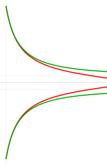
<figcaption class="paper-figure-caption"><b>Fig 2.</b> Figure 1 provides a direct check of the branch gluing in the large-r approximation. The two upper branches meet at r = r∗, and the lower half follows by time reflection. Thus the figure shows the same Lorentzian construction used later in the exact black-pole geometry, but in a regime where the angular dependence has dropped out. The time integrals can also be written in closed form. For the timelike integral we set</figcaption>
</figure>
<figure class="paper-figure-card">

<figcaption class="paper-figure-caption"><b>Fig 3.</b> Figure 2: Boundary interval T as a function of the radial turning point r0 in the large-r regime. The map is single-valued inside the validity window of the asymptotic expansion.</figcaption>
</figure>
<figure class="paper-figure-card">
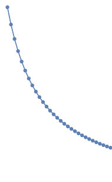
<figcaption class="paper-figure-caption"><b>Fig 4.</b> Figure 2 shows that the large-r time map is single-valued. Therefore the multibranch fixed-boundary-interval structure found later cannot be attributed to the universal near- boundary region. It is generated only when the exact localized functions are restored and the surface becomes sensitive to the black-pole core. We now turn to the area. Let N = (2π)6V4 (3.38)</figcaption>
</figure>
<figure class="paper-figure-card">
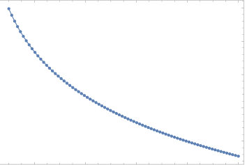
<figcaption class="paper-figure-caption"><b>Fig 5.</b> Figure 3: Timelike-entanglement area in the asymptotic regime as a function of the radial turning point r0. The left panel shows the renormalized real part after the logarithmic UV subtraction. The right panel shows the finite imaginary part from the timelike branch.</figcaption>
</figure>
</div>

<p><strong>Summary.</strong> This paper analyzes two holographic observables—timelike entanglement entropy and subregion complexity—for black holes in AdS3<em>S3</em>T4 geometry. By using a localized prescription, the authors demonstrate that these measurements are sensitive to subtle geometric features near a cap-horizon transition region. This confirms that timelike Lorentzian probes can reveal complex structure missed by simpler asymptotic or idealized models.</p>
<p><strong>Why it may be interesting.</strong> While highly technical, the methodology of using holographic complexity and entanglement entropy to map out fine-grained geometric structures near phase transitions or boundaries is a powerful theoretical tool applicable across many quantum field theories.</p>
<details>
<summary>Detailed structure</summary>
<p><strong>Main problem.</strong> The study investigates how timelike entanglement entropy and subregion complexity probe localized geometric effects within black holes, distinguishing these measurements from simpler models like the BTZ solution.</p>
<p><strong>Main result.</strong> Timelike Lorentzian observables reveal geometry-dependent features sensitive to the cap–horizon transition region, which are absent in leading large-$r$ approximations or the standard BTZ background.</p>
<p><strong>Method.</strong> The authors employ a localized timelike prescription involving solving time equations for multiple admissible branches and analyzing the resulting renormalized lifted area (for entanglement) and volume (for complexity).</p>
<p><strong>Model / system.</strong> The system is a black hole with asymptotic AdS3<em>S3</em>T4 geometry, specifically focusing on the 'black-pole solution' which exhibits nontrivial dependence on internal sphere coordinates.</p>
<p><strong>Key observables.</strong> Timelike Entanglement Entropy (yielding complex lifted area) and Timelike Subregion Complexity (yielding real, finite renormalized volume).</p>
<p><strong>Important parameters / regimes.</strong> The analysis is sensitive to the boundary interval size, particularly near a transition angle $\theta_\star$, which separates cap-side and horizon-side geometry.</p>
<p><strong>Assumptions / limitations.</strong> A fixed-boundary-interval selection is essential due to non-monotonic temporal families in the exact black-pole geometry; the complexity is interpreted as an outside-horizon patch volume.</p>
<p><strong>Paper structure.</strong> The paper compares results against BTZ and large-$r$ limits, detailing how localized observables probe specific geometric features (like the cap/horizon transition) that are otherwise missed in simpler asymptotic analyses.</p>
</details>
<details>
<summary>Abstract</summary>
<p>We study timelike entanglement entropy and timelike subregion complexity in localized black holes with asymptotic AdS3<em>S3</em>T4 geometry, focusing on the black-pole solution. Unlike the BTZ solution, the black pole exhibits a nontrivial dependence on the internal sphere through the functions $K_y(r,θ)$ and $G(r,θ)$. Both observables are constructed from spacelike and timelike Lorentzian branches, but they probe the geometry in different ways: timelike entanglement yields a complex lifted area, while timelike complexity gives a real, finite renormalized volume. We employ a localized timelike prescription in which the branch profile is built at an angular label $θ_0$ and subsequently lifted over the physical internal angle $θ$. In the large-$r$ regime, the leading angular dependence drops out, recovering the expected short-interval behaviour. In the exact black-pole geometry, the temporal families become non-monotonic, making a fixed-boundary-interval selection essential. As the boundary interval increases, the selected branches move inward and become sensitive to the localized cap-horizon transition region. These results demonstrate that timelike Lorentzian observables probe localized-geometry effects that are absent in BTZ and in the leading large-$r$ description.</p>
</details>
<p><sub><a href="#top">↑ back to top</a></sub></p>

<p><a id="paper-2607.11009"></a></p>
<h3 id="layer-resolved-topological-metals-in-the-bilayer-lieb-lattice"><a href="http://arxiv.org/abs/2607.11009v1">Layer-Resolved Topological Metals in the Bilayer Lieb Lattice</a></h3>
<p><strong>Authors:</strong> Mengjie Yang, S Rahul, Giandomenico Palumbo<br>
<strong>Type:</strong> theory · <strong>Category:</strong> other · <strong>PDF:</strong> <a href="https://arxiv.org/pdf/2607.11009v1">https://arxiv.org/pdf/2607.11009v1</a><br>
<strong>Analysis basis:</strong> full PDF text, analyzed in chunks
<strong>Topic relevance:</strong> 🔥 <code>analog quantum simulation</code> <strong>4/5</strong> · <code>exotic spin models in light-matter</code> <strong>1/5</strong> · <code>non-equilibrium dynamics</code> <strong>1/5</strong></p>
<div class="figure-strip-hint">↔ Scroll figures horizontally</div>
<div class="paper-figures-scroll">
<figure class="paper-figure-card">
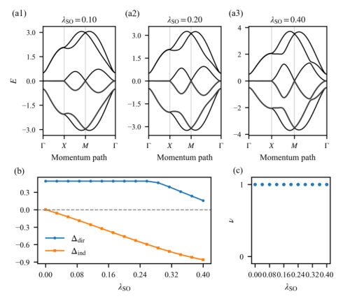
<figcaption class="paper-figure-caption"><b>Fig 1.</b> Figure 2. Bulk spectrum and parity diagnostic of the direct- gap-protected pseudo-spin Chern metal with opposite-sign in- tralayer τz OAM-dependent coupling (labeled λSO for consis- tency with the axes; see the footnote after Eq. (5)), Eqs. (5) and (6). (a1)–(a3) Bulk band structures along Γ–X–M–Γ for λSO = 0.10, 0.20, 0.40. The OAM-dependent coupling term deforms the central bands and drives an indirect band over- lap, while the lower two-band subspace remains separated from the remaining bands by a finite direct gap in the plotted range. (b) Direct and indirect gaps, defined in Eq. (8), as functions of λSO, evaluated over the full Brillouin zone. The regime with ∆dir &gt; 0 and ∆ind &lt; 0...</figcaption>
</figure>
<figure class="paper-figure-card">
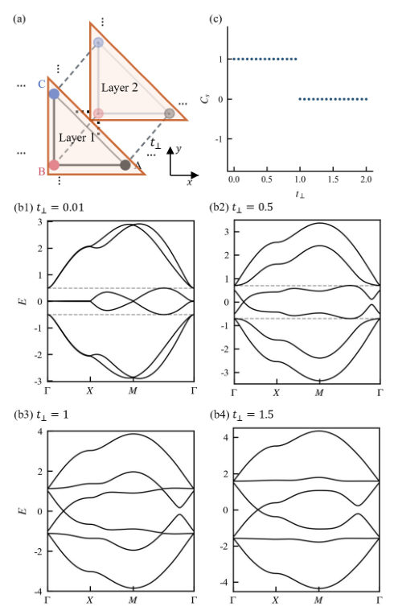
<figcaption class="paper-figure-caption"><b>Fig 2.</b> Figure 1. Bulk OAM-coupling-free parent spin-Chern semimetal. (a) Bilayer Lieb lattice for the parent Hamil- tonian H0(k) in Eq. (2), built from the Chern-semimetal block in Eq. (1). The interlayer coupling is orbital diago- nal, Vinter = t⊥I3. (b1)–(b4) Bulk spectra under periodic boundary conditions, plotted along Γ −X −M −Γ for repre- sentative interlayer couplings t⊥= 0.01, 0.5, 1, 1.5. The spec- tra are plotted in black. In panels (b1) and (b2), the gray dashed horizontal lines mark the energy reference lines used to indicate the zero-indirect gap, which is preserved at small t⊥. (c) Pseudo-spin Chern number Cs, defined in Eq. (4), as a function of t⊥. The nonzero plateau Cs = 1...</figcaption>
</figure>
<figure class="paper-figure-card">
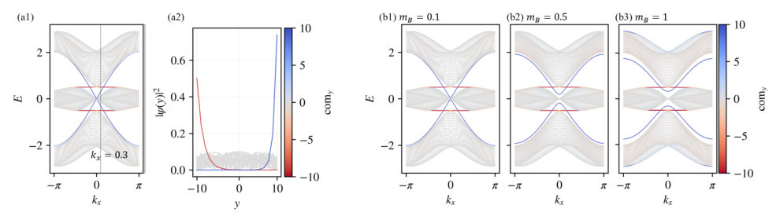
<figcaption class="paper-figure-caption"><b>Fig 3.</b> Figure 3. Edge states for the Hamiltonian in Eq. (2) at λSO = 0. (a1) mB = 0. Energy spectrum E(kx) with periodic boundary conditions along x and open boundary conditions along y. The grey curves denote the full finite-strip spectrum, while the highlighted red and blue branches indicate states localized near opposite y boundaries, classified by their center of mass comy. The vertical line marks the representative momentum kx = 0.3 used in (a2). (a2) Real-space probability profiles |ψ(y)|2 of the selected states at kx = 0.3. The red and blue profiles show strong localization at opposite boundaries, whereas the grey profiles correspond to extended or weakly localized strip states. (b1)–(b3)...</figcaption>
</figure>
<figure class="paper-figure-card">
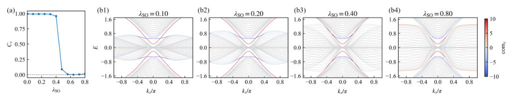
<figcaption class="paper-figure-caption"><b>Fig 4.</b> Figure 4. OAM-coupling-driven flat-to-dispersive edge bands and topological phase transition. (a) Cylinder (xPBC-yOBC) pseudo-spin Chern marker Cs as a function of λSO with the edge mass mB = 0.5 switched on. Cs stays quantized at 1 throughout the weak-to-intermediate OAM-coupling range, showing that HB gaps a single edge without altering the bulk topology of the cylinder, and drops sharply once the direct gap closes near λSO ≃0.6. (b1)–(b4) Ribbon spectra for λSO = 0.10, 0.20, 0.40, 0.80, with selected states colored by their transverse center of mass comy. The gray curves show the full ribbon spectrum, while the red and blue branches correspond to states localized near opposite y...</figcaption>
</figure>
</div>

<p><strong>Summary.</strong> The paper theoretically investigates topological metallic phases on a bilayer Lieb lattice, utilizing a layer-resolved pseudo-spin Chern number as the key diagnostic tool. It demonstrates how tuning coupling strengths can drive the system from a semimetal to a metal while preserving quantized topology. The findings offer a blueprint for engineering controlled, gapless edge states in synthetic quantum materials.</p>
<p><strong>Why it may be interesting.</strong> This work provides a concrete theoretical framework for engineering topologically non-trivial gapless phases in synthetic systems by controlling layer-resolved pseudo-spin degrees of freedom. The concept of 'pseudo-spin' is highly relevant to AMO platforms using internal states.</p>
<details>
<summary>Detailed structure</summary>
<p><strong>Main problem.</strong> The study aims to characterize a two-dimensional time-reversal-invariant topological metallic phase on a bilayer Lieb lattice, focusing on the quantization of layer-resolved pseudo-spin Chern number.</p>
<p><strong>Main result.</strong> The system realizes a 'pseudo-spin Chern metal' where opposite-sign OAM coupling converts a semimetal into a metal while preserving quantized topology. The boundary states are asymmetric, featuring both flat bands and gapless Dirac cones.</p>
<p><strong>Method.</strong> Theoretical analysis using projected pseudo-spin spectra to calculate the layer-resolved pseudo-spin Chern number ($C_s$) and analyzing edge physics via continuum models.</p>
<p><strong>Model / system.</strong> The model is a bilayer Lieb lattice for spinless fermions, analyzed through Hamiltonians incorporating interlayer coupling ($t_\perp$) and intralayer Orbital-Angular-Momentum-dependent (OAM) couplings. The system exhibits distinct semimetallic and metallic regimes.</p>
<p><strong>Key observables.</strong> Pseudo-spin Chern Number ($C_s$), direct gap ($\Delta_{	ext{dir}}$), indirect gap ($\Delta_{	ext{ind}}$), flat band existence, and Dirac cone formation at edges.</p>
<p><strong>Important parameters / regimes.</strong> The strength of the OAM coupling (e.g., $\lambda_{SO}$ or $H_{SOC}$) which drives the semimetal-to-metal transition; maintaining open direct and pseudo-spin gaps.</p>
<p><strong>Assumptions / limitations.</strong> The analysis relies on defining topological invariants using projected operators, assuming that the gap closing/opening dictates the phase transitions.</p>
<p><strong>Figures summary.</strong> Figures illustrate bulk spectra showing the semimetal-to-metal transition as a function of coupling strength, and diagrams detail the asymmetric nature of boundary states (flat bands vs. Dirac cones).</p>
<p><strong>Paper structure.</strong> The paper progresses by first establishing the topological semimetallic phase via $C_s$, then introducing OAM coupling to induce metallicity while maintaining quantized topology, and finally analyzing the distinct, asymmetric edge physics.</p>
</details>
<details>
<summary>Abstract</summary>
<p>We identify a two-dimensional time-reversal-invariant topological metallic phase on a bilayer Lieb lattice, characterized by a quantized layer--resolved pseudo-spin Chern number. Without the orbital-angular-momentum-dependent (OAM-dependent) coupling, the system gives rise to a time-reversal-invariant topological semimetal with a zero indirect gap and quantized pseudo-spin Chern number. Opposite-sign intralayer OAM-dependent coupling immediately converts the zero-indirect-gap semimetal into a metal, in which the global spectrum is metallic while the layer--resolved pseudo-spin Chern number remains well defined as long as the direct gap at each crystal momentum and the pseudo-spin gap remain open. The model also exhibits asymmetric boundary states: in the semimetallic regime, one edge hosts perfectly flat bands, whereas the opposite edge supports gapless counter-propagating modes forming a one-dimensional Dirac cone. An edge-localized interlayer coupling gaps only the counter-propagating edge states, leaving the flat-band edge essentially intact, while intralayer OAM-dependent coupling bends the exact flat band into a dispersive boundary mode without affecting the gapped Dirac edge. These results open a route toward the controlled engineering of layer--resolved topological gapless phases in synthetic and quantum materials.</p>
</details>
<p><sub><a href="#top">↑ back to top</a></sub></p>

<p><a id="paper-2607.11048"></a></p>
<h3 id="spectroscopy-of-low-lying-valley-states-in-hot-sisige-quantum-dots"><a href="http://arxiv.org/abs/2607.11048v1">Spectroscopy of low-lying valley states in hot Si/SiGe quantum dots</a></h3>
<p><strong>Authors:</strong> Connor Nasseraddin, Heun Mo Yoo, Tanner M. Janda, Jason R. Petta<br>
<strong>Type:</strong> experiment · <strong>Category:</strong> quantum information and computing · <strong>PDF:</strong> <a href="https://arxiv.org/pdf/2607.11048v1">https://arxiv.org/pdf/2607.11048v1</a><br>
<strong>Analysis basis:</strong> full PDF text, analyzed in chunks
<strong>Topic relevance:</strong> 🔥 <code>QC/QI experiment</code> <strong>4/5</strong> · <code>quantum measurements</code> <strong>1/5</strong> · <code>spintronics-quantum-optics interface</code> <strong>1/5</strong></p>
<div class="figure-strip-hint">↔ Scroll figures horizontally</div>
<div class="paper-figures-scroll">
<figure class="paper-figure-card">
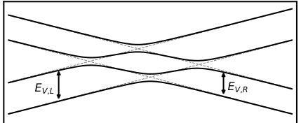
<figcaption class="paper-figure-caption"><b>Fig 1.</b> FIG. 1. (a) False-color scanning electron microscope image of a device identical to the one used in this experiment. A DQD (white circles) is defined using plunger (red) and barrier (green) gates in the upper-half of the device. A dot charge sensor (DCS) is formed in the lower-half of the device (orange circle). Charge reservoirs are accumulated beneath the blue gates. (b) DCS conductance g plotted as a function of plunger gate voltages VL and VR. The detuning axis (ε) is overlaid on the DQD charge stability diagram. (c) DQD energy level diagram plotted as a function of ε in the coupled (solid lines) and uncoupled (dashed lines) regimes. The valley splitting of the left (right) dot is...</figcaption>
</figure>
<figure class="paper-figure-card">
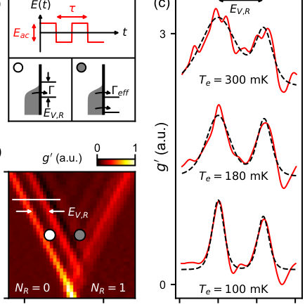
<figcaption class="paper-figure-caption"><b>Fig 2.</b> FIG. 2. Temperature dependence of PGS. (a) Top panel: A square pulse repeatedly loads and unloads an electron from the QD. Bottom panel: The tunnel rate is dependent on the number of energetically accessible levels (see main text). (b) Derivative of the DCS conductance, g′, plotted as a function of ER and Eac. The white and gray markers denote the con- figurations shown in the bottom panel of (a). (c) Line cuts acquired at the white horizontal line in (b) for three different values of Te with EV,R ∼120 µeV. Data are smoothed and normalized (see main text), then fit to the derivative of the sum of two Fermi functions (dashed lines), yielding the valley splitting EV,R.</figcaption>
</figure>
<figure class="paper-figure-card">
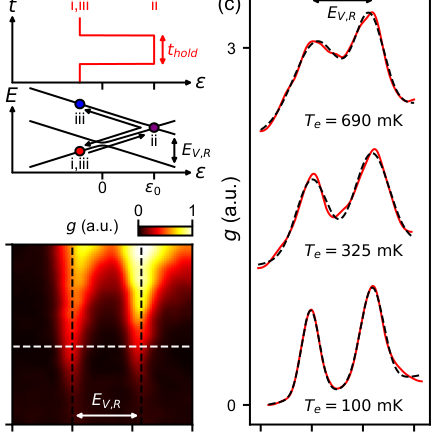
<figcaption class="paper-figure-caption"><b>Fig 3.</b> FIG. 3. Temperature dependence of DAPS. (a) Top panel: Pulse sequence. Bottom panel: Energy level diagram illus- trating the DAPS protocol. If point ii is near an anti-crossing, enhanced charge dephasing yields a mixed charge state. (b) DAPS data obtained from the right QD. g is plotted as a function of thold and ε. (c) Line cuts acquired at the white horizontal dashed line in (b) for three different values of Te with EV,R ∼120 µeV. Data are smoothed and normalized (see main text), then fit to the sum of two Gaussians. The functional temperature range of DAPS exceeds PGS by nearly a factor of two.</figcaption>
</figure>
<figure class="paper-figure-card">
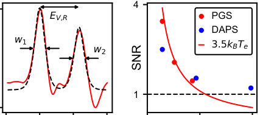
<figcaption class="paper-figure-caption"><b>Fig 4.</b> FIG. 4. (a) Sample PGS valley splitting measurement depicting the variables used to calculate the SNR with EV,R ∼120 µeV. (b) SNR calculated from EV,R, w1, and w2 extracted from Figs. 2(c) and 3(c). The red line shows the theoretical linewidth of 3.5kBTe for PGS. For EV,R = 120 µeV, DAPS provides an SNR &gt; 1 at Te ∼700 mK.</figcaption>
</figure>
</div>

<p><strong>Summary.</strong> The research compares two spectroscopic methods, PGS and DAPS, used to measure valley state splittings in Si/SiGe quantum dots. The study demonstrates that DAPS offers significantly higher energy resolution than PGS, especially at elevated temperatures. This finding establishes DAPS as a superior technique for characterizing the critical parameters needed for building scalable spin-based quantum processors.</p>
<p><strong>Why it may be interesting.</strong> This work provides crucial experimental benchmarks on characterizing fundamental energy splittings in solid-state qubits, directly impacting the feasibility assessment of silicon-based quantum computing architectures.</p>
<details>
<summary>Detailed structure</summary>
<p><strong>Main problem.</strong> Low-lying valley states in silicon quantum dots may impede the development of large-scale spin-based quantum processors, necessitating methods to increase valley splitting.</p>
<p><strong>Main result.</strong> Detuning Axis Spectroscopy (DAPS) significantly outperforms Pulsed-Gate Spectroscopy (PGS), resolving valley splittings down to $\sim 86 \mu	ext{eV}$ even at elevated temperatures ($700 	ext{ mK}$).</p>
<p><strong>Method.</strong> The authors compare two spectroscopic techniques, PGS and DAPS, by measuring the conductance of a double quantum dot coupled to a charge sensor.</p>
<p><strong>Model / system.</strong> The experiment uses spin qubits fabricated in Si/SiGe heterostructures containing double quantum dots (DQD). The measurements probe the energy splitting between valley states within these semiconductor nanostructures.</p>
<p><strong>Key observables.</strong> Valley splitting ($E_{V,R}$), measured via spectral features in the charge sensor conductance ($g$).</p>
<p><strong>Important parameters / regimes.</strong> Measurement temperatures up to $700 	ext{ mK}$; resolution limits of $\sim 86 \mu	ext{eV}$ (DAPS) vs. $\sim 210 \mu	ext{eV}$ (PGS).</p>
<p><strong>Assumptions / limitations.</strong> The superior performance of DAPS is attributed to its measurement mechanism relying only on interdot charge transitions, avoiding the thermal broadening associated with coupling to a Fermi reservoir in PGS.</p>
<p><strong>Figures summary.</strong> Figures illustrate the device structure and energy level diagrams. Key comparisons show the temperature dependence of spectroscopic features, demonstrating that DAPS maintains high resolution at higher temperatures than PGS.</p>
<p><strong>Paper structure.</strong> The paper establishes the problem (valley states hindering qubits), compares two measurement techniques (PGS vs. DAPS) across varying temperatures, presents quantitative results showing DAPS's superior energy resolution, and concludes by recommending DAPS for practical quantum device characterization.</p>
</details>
<details>
<summary>Abstract</summary>
<p>The presence of low-lying valley states in Si may hinder the development of large-scale spin-based quantum processors. Rapid prototyping of novel Si/SiGe heterostructures and gate stacks will be central to identifying pathways that increase the valley splitting. We compare the performance of pulsed-gate spectroscopy (PGS) and detuning axis spectroscopy (DAPS) at temperatures up to 700 mK. We find that DAPS outperforms PGS, with DAPS resolving valley splittings as small as ~86 $μ$eV, while the energy resolution of PGS is only ~210~$μ$eV. Our work demonstrates that DAPS can be used to efficiently extract valley splittings at elevated temperatures in high throughput cryostats.</p>
</details>
<p><sub><a href="#top">↑ back to top</a></sub></p>

<p><a id="paper-2607.11727"></a></p>
<h3 id="deploying-and-validating-a-metropolitan-qkd-secure-network-architecture-and-field-performance"><a href="http://arxiv.org/abs/2607.11727v1">Deploying and validating a metropolitan QKD secure network: architecture and field performance</a></h3>
<p><strong>Authors:</strong> Claudia De Lazzari, Nicola Biagi, Damiano Giani, Marco Russo, Fernando Chirici, Francesco Stocco, Saverio Francesconi, Giacomo Ferranti, Alessandro Soureal, Antonella Sanguineti, Bartolomeo Montrucchio, Christian Laurenzi, Oliviero Testa, Guglielmo Morgari, Antonio Manzalini, Tommaso Occhipinti, Alessandro Zavatta, Davide Bacco<br>
<strong>Type:</strong> experiment · <strong>Category:</strong> quantum information and computing · <strong>PDF:</strong> <a href="https://arxiv.org/pdf/2607.11727v1">https://arxiv.org/pdf/2607.11727v1</a><br>
<strong>Analysis basis:</strong> full PDF text, analyzed in chunks
<strong>Topic relevance:</strong> 🔥 <code>QC/QI experiment</code> <strong>4/5</strong> · <code>quantum optics experiment</code> <strong>1/5</strong></p>
<div class="figure-strip-hint">↔ Scroll figures horizontally</div>
<div class="paper-figures-scroll">
<figure class="paper-figure-card">
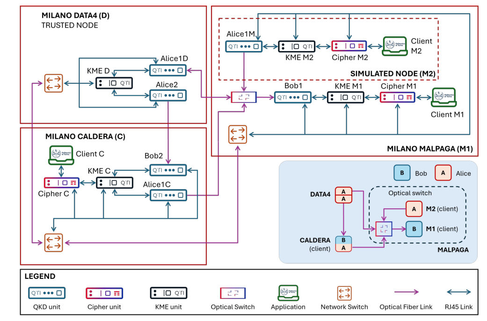
<figcaption class="paper-figure-caption"><b>Fig 1.</b> Figure 1: Network architecture overview. The three red boxes represent the Points of Presence (PoPs): Milano Data4 (node D), Milano Caldera (node C), and Milano Malpaga. The latter PoP hosts two nodes — M1 and M2 — with the second implemented using a fiber spool for simulation purposes. The inset at the bottom right shows a high-level representation of the node configuration. Refer to the main text for a detailed description of the network.</figcaption>
</figure>
<figure class="paper-figure-card">
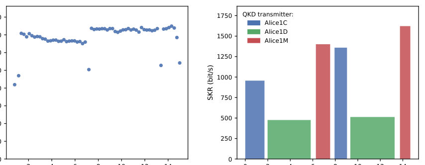
<figcaption class="paper-figure-caption"><b>Fig 2.</b> Figure 2: Secure key rate (SKR) of the QKD network during the field trial. a) shows the performance of the point-to-point link between the Alice2 and Bob2 QKD devices, whereas b) refers to the switched links (Alice1M in node Malpaga M2, Alice1C in node Caldera, Alice1D in node Data4, and Bob1 in node Malpaga M1). In the latter plot, the height of each bar represents the mean SKR during the active period of the corresponding link, while its width reflects the time duration of the specific active configuration.</figcaption>
</figure>
</div>

<p><strong>Summary.</strong> This paper reports the experimental deployment and validation of a metropolitan Quantum Key Distribution (QKD) network across data centers in Milan. It proves that by integrating QKD hardware with layered key management and SDN orchestration, secure, information-theoretically protected communication can be achieved at scale. The results establish a replicable blueprint for quantum-secure infrastructure.</p>
<p><strong>Why it may be interesting.</strong> While focused on networking rather than fundamental physics, the work demonstrates practical quantum communication protocols and system integration challenges relevant to building large-scale quantum infrastructure.</p>
<details>
<summary>Detailed structure</summary>
<p><strong>Main problem.</strong> The work addresses the existential threat posed by quantum computers to classical cryptography by deploying a Quantum Key Distribution (QKD) secure network.</p>
<p><strong>Main result.</strong> The authors successfully demonstrated operational readiness for metropolitan-scale QKD networks, validating key establishment and service continuity across complex, reconfigurable topologies involving trusted nodes.</p>
<p><strong>Method.</strong> The validation involved testing the full system stack—from quantum key generation to application layer consumption—across multiple simulated link failures and path changes.</p>
<p><strong>Model / system.</strong> The physical platform is a metropolitan-scale QKD network connecting data centers in Milan, utilizing installed fiber infrastructure, layered architecture (QKD, KM, Encryption), and SDN orchestration.</p>
<p><strong>Key observables.</strong> Secure Key Rate (SKR) stability, successful key propagation through trusted nodes, and sustained high-intensity throughput during application layer testing.</p>
<p><strong>Important parameters / regimes.</strong> Metropolitan scale deployment, O-band (1310 nm) quantum transmission over installed dark fiber, and the use of standards-compliant Key Management (KM).</p>
<p><strong>Assumptions / limitations.</strong> The system operates in a realistic environment coexisting with production ICT systems, rather than a purely controlled lab setting.</p>
<p><strong>Figures summary.</strong> Figures illustrate the network architecture overview, SKR stability over time during link activation/switching, and color-coded active link intervals corresponding to different operational states.</p>
<p><strong>Paper structure.</strong> The paper details the layered architecture (QKD $
ightarrow$ KM $
ightarrow$ Encryption), presents experimental validation across three test scenarios (direct, two-hop via trusted node, multi-hop), and concludes with application layer performance testing.</p>
</details>
<details>
<summary>Abstract</summary>
<p>The advent of cryptographically relevant quantum computers poses an existential threat to classical public-key infrastructure. Quantum Key Distribution (QKD) addresses this challenge by providing information-theoretic security for key establishment, independently of any computational hardness assumption. In this work, the deployment and experimental validation of a metropolitan-scale quantum-secure network between data centers in Milan is reported. The network operates over installed fiber infrastructure and implements a layered architecture integrating QKD hardware, standards-compliant Key Management (KM), and centralized Software-Defined Networking (SDN) orchestration. Dynamic path reconfiguration via active optical switching and trusted-node routing allow automated fail-over solutions. Application-layer validation across diverse protocols and workloads confirms the seamless interoperability of all system components. These results establish the technical and operational readiness of metropolitan QKD networks for production deployment, and offer a replicable blueprint for building quantum-secure communication infrastructure at metropolitan scale.</p>
</details>
<p><sub><a href="#top">↑ back to top</a></sub></p>

<p><a id="paper-2607.11369"></a></p>
<h3 id="moment-based-ppt-criteria-for-random-bipartite-states"><a href="http://arxiv.org/abs/2607.11369v1">Moment-based PPT criteria for random bipartite states</a></h3>
<p><strong>Authors:</strong> Cécilia Lancien, Kieran McShane<br>
<strong>Type:</strong> theory · <strong>Category:</strong> quantum information and computing · <strong>PDF:</strong> <a href="https://arxiv.org/pdf/2607.11369v1">https://arxiv.org/pdf/2607.11369v1</a><br>
<strong>Analysis basis:</strong> full PDF text, analyzed in chunks
<strong>Topic relevance:</strong> 🔥 <code>entanglement &amp; information structure</code> <strong>4/5</strong> · <code>Keldysh / 2PI / non-Gaussian methods</code> <strong>1/5</strong></p>
<div class="figure-strip-hint">↔ Scroll figures horizontally</div>
<div class="paper-figures-scroll">
<figure class="paper-figure-card">
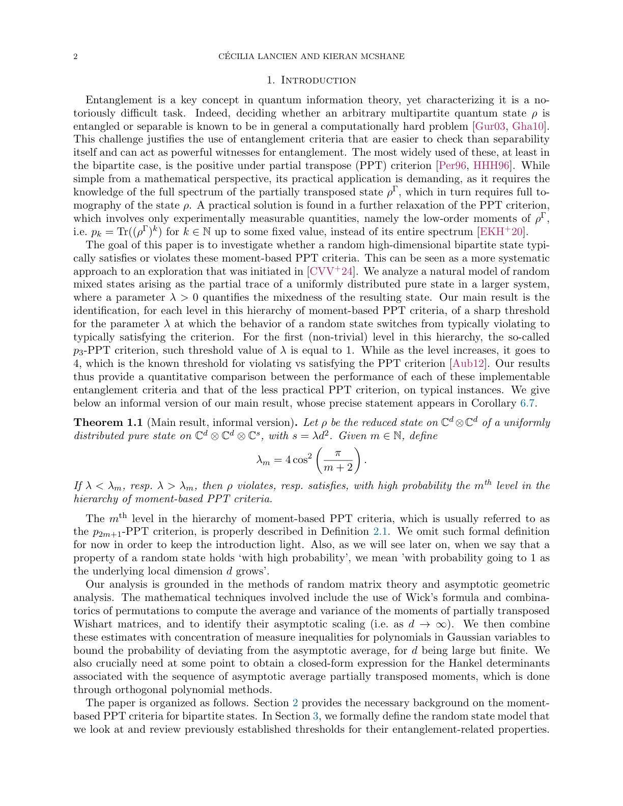
<figcaption class="paper-figure-caption"><b>Fig 1.</b> Low-resolution page preview, page 2</figcaption>
</figure>
<figure class="paper-figure-card">
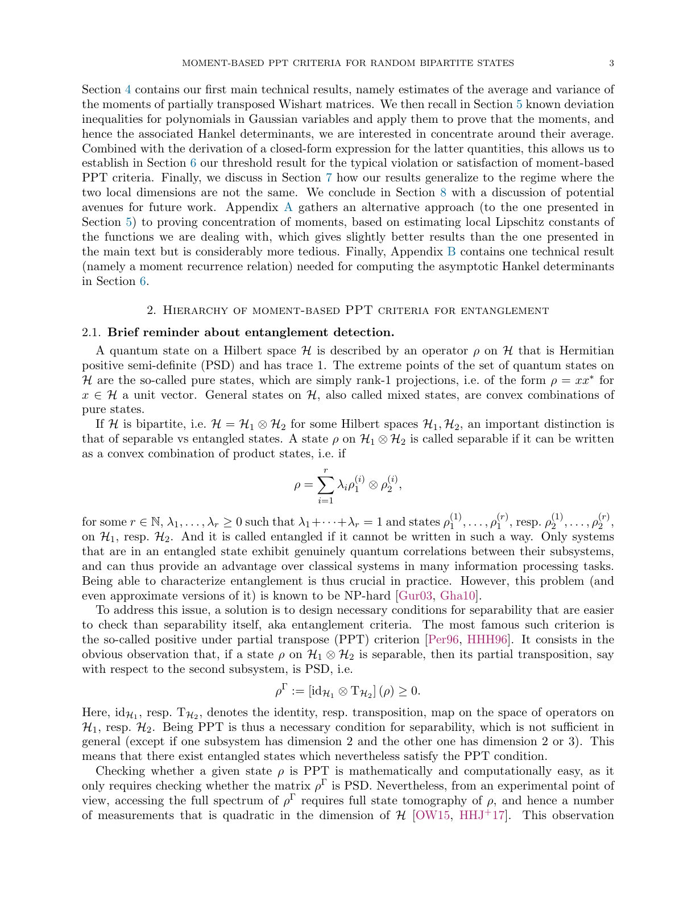
<figcaption class="paper-figure-caption"><b>Fig 2.</b> Low-resolution page preview, page 3</figcaption>
</figure>
<figure class="paper-figure-card">
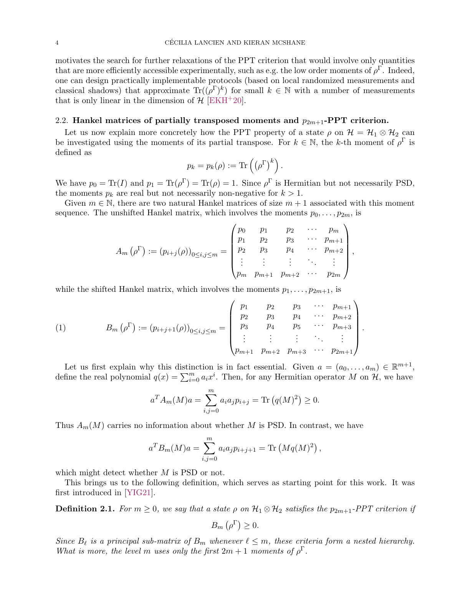
<figcaption class="paper-figure-caption"><b>Fig 3.</b> Low-resolution page preview, page 4</figcaption>
</figure>
<figure class="paper-figure-card">
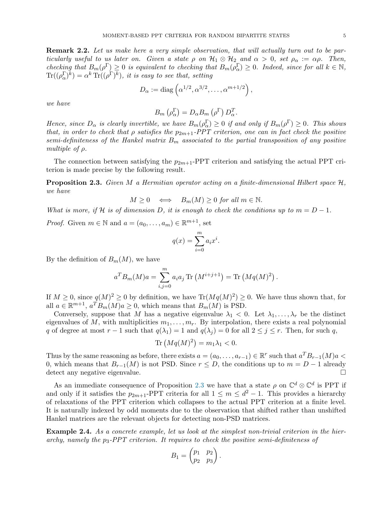
<figcaption class="paper-figure-caption"><b>Fig 4.</b> Low-resolution page preview, page 5</figcaption>
</figure>
<figure class="paper-figure-card">
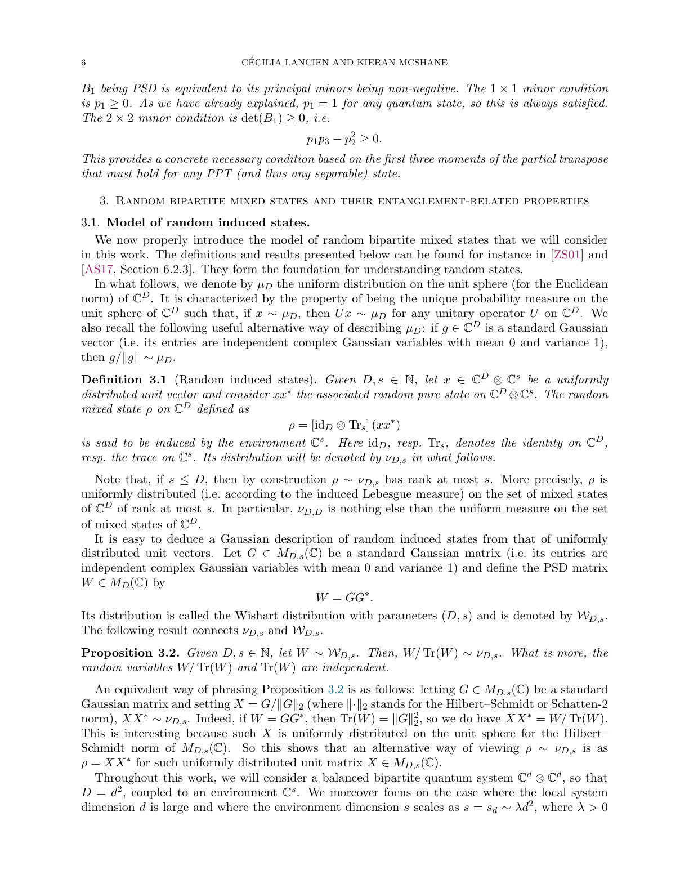
<figcaption class="paper-figure-caption"><b>Fig 5.</b> Low-resolution page preview, page 6</figcaption>
</figure>
</div>

<p><strong>Summary.</strong> This paper analyzes how well moment-based relaxations of the PPT criterion detect entanglement in large, random bipartite quantum states. By employing advanced techniques from random matrix theory and concentration inequalities, the authors derive sharp thresholds that quantify the scaling relationship between system size, environment coupling, and the satisfaction of these criteria.</p>
<p><strong>Why it may be interesting.</strong> This work provides rigorous mathematical tools to test entanglement properties using only experimentally accessible quantities (moments), which is crucial for designing practical quantum information protocols where full state tomography is impossible.</p>
<details>
<summary>Detailed structure</summary>
<p><strong>Main problem.</strong> The work investigates the typical detection performance of moment-based relaxations of the Positive Partial Transpose (PPT) criterion for entanglement in high-dimensional bipartite quantum systems.</p>
<p><strong>Main result.</strong> Sharp thresholds are identified for the environment dimension $s$ relative to the system size $d$, determining when random states typically satisfy or violate these moment-based entanglement criteria.</p>
<p><strong>Method.</strong> The analysis combines advanced mathematical tools, including concentration of measure arguments, combinatorics of permutations, and orthogonal polynomial methods applied to moments of partially transposed random matrices.</p>
<p><strong>Model / system.</strong> The system under study consists of random bipartite mixed states $
ho$ on $\mathbb{C}^d \otimes \mathbb{C}^d$, specifically those derived as the marginal over an environment $\mathbb{C}^s$ of a uniformly distributed pure state. The analysis focuses on the asymptotic limit where $d$ is large and $s \sim \lambda d^2$.</p>
<p><strong>Key observables.</strong> Low-order moments, $p_k = 	ext{Tr}((
ho^\Gamma)^k)$, and the associated Hankel matrices used to define the moment-based PPT criteria.</p>
<p><strong>Important parameters / regimes.</strong> Local dimension $d$, environment scaling factor $\lambda$, and the moment level $m$ defining the criterion ($s = \lambda d^2$).</p>
<p><strong>Assumptions / limitations.</strong> The analysis relies on approximating experimental measurements using low-order moments and assumes that random states are well-approximated by Wishart matrices derived from Gaussian distributions.</p>
<p><strong>Paper structure.</strong> The paper progresses by first establishing the theoretical framework of moment relaxations to PPT, then developing tools based on concentration inequalities for these moments (using Lipschitz functions and random matrix theory), and finally deriving sharp thresholds $\lambda_m$ that characterize the transition between satisfying and violating the criteria.</p>
</details>
<details>
<summary>Abstract</summary>
<p>Moment-based relaxations of the positive partial transpose (PPT) criterion have been recently introduced, as a hierarchy of entanglement criteria involving only experimentally accessible quantities of a given bipartite state. The goal of this work is to study their typical detection performance on high-dimensional bipartite systems. Concretely, we investigate whether random bipartite mixed states on $\mathbb C^d\otimes\mathbb C^d$, obtained as the marginal over an environment $\mathbb C^s$ of a uniformly distributed pure state, generically satisfy or violate them. For each fixed level $m\in\mathbb N$ in this hierarchy of moment-based PPT criteria, we are able to identify a threshold environment dimension $s=λ_md^2$ at which the behavior of the associated random state switches from violating to satisfying it, with probability going to $1$ as $d$ grows. The proof combines combinatorics of permutations techniques to estimate the average value of moments of partially transposed random states and concentration of measure arguments to bound the probability of deviating from such average, when the underlying local dimension $d$ is large. We additionally need tools from the theory of Hankel determinant evaluation via orthogonal polynomials.</p>
</details>
<p><sub><a href="#top">↑ back to top</a></sub></p>

<p><a id="paper-2607.11846"></a></p>
<h3 id="optimal-operating-temperature-for-industry-compatible-silicon-spin-quantum-computing-colder-is-not-necessarily-better"><a href="http://arxiv.org/abs/2607.11846v1">Optimal operating temperature for industry-compatible silicon spin quantum computing: colder is not necessarily better</a></h3>
<p><strong>Authors:</strong> Paul Steinacker, Amanda E. Seedhouse, Nard Dumoulin Stuyck, Tuomo Tanttu, MengKe Feng, Santiago Serrano, Ensar Vahapoglu, Samuel K. Bartee, Philip Y. Mai, Alexis Shaw, Andreas Nickl, Sebastian Pauka, Brendan Harlech-Jones, Juan P. Dehollain, Fay E. Hudson, Kok Wai Chan, Thomas A. Ohki, David Reilly, Christopher C. Escott, Chih Hwan Yang, Wee Han Lim, Arne Laucht, Andre Saraiva, Andrew S. Dzurak, Jared H. Cole<br>
<strong>Type:</strong> both · <strong>Category:</strong> quantum information and computing · <strong>PDF:</strong> <a href="https://arxiv.org/pdf/2607.11846v1">https://arxiv.org/pdf/2607.11846v1</a><br>
<strong>Analysis basis:</strong> full PDF text, analyzed in chunks
<strong>Topic relevance:</strong> 🔥 <code>QC/QI experiment</code> <strong>4/5</strong> · <code>spintronics-quantum-optics interface</code> <strong>1/5</strong></p>
<div class="figure-strip-hint">↔ Scroll figures horizontally</div>
<div class="paper-figures-scroll">
<figure class="paper-figure-card">
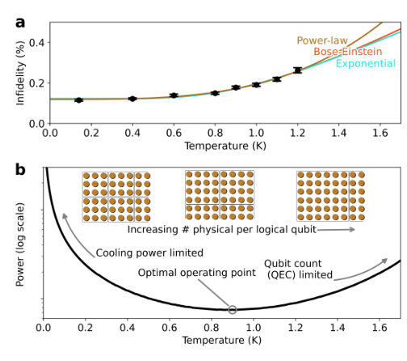
<figcaption class="paper-figure-caption"><b>Fig 1.</b> Figure 1 | Fidelity and operating power as a function of temperature. a, Illustration of qubit operation infidelity examples as a function of temperature. The black dots represent Clifford gate infidelity measured with RB taken from ref.44. Error bars represent the 95 % confidence level. The temperature response is fitted to three examples of functional forms motivated by common quantum computing modalities. b, Operating power as a function of temperature, illustrating the trade-off between high cryogenic cooling power consumption, and high qubit count or reduced logical qubit count for fixed hardware.</figcaption>
</figure>
<figure class="paper-figure-card">

<figcaption class="paper-figure-caption"><b>Fig 2.</b> Figure 2 | Relaxation and coherence time. a, Relaxation time, T1, of devices A–C and E as a function of temperature for Q1 and Q2. b, Dephasing times, T Ramsey 2 and T Hahn 2 , of devices A–F as a function of temperature for Q1 and Q2. c–e, Power law fitting parameters κ, TX, and n for T1, T Ramsey 2 , and T Hahn 2 of devices A–F for Q1 and Q2. Device C was excluded from the fit due to the limited amount of data. For comparison, relaxation and coherence times for devices E and F are imported from ref.44 and ref.41, respectively. Error bars represent the 95 % confidence level.</figcaption>
</figure>
<figure class="paper-figure-card">

<figcaption class="paper-figure-caption"><b>Fig 3.</b> Figure 2a,b shows the spin relaxation and coherence times of devices A–F as a function of temperature. Across</figcaption>
</figure>
<figure class="paper-figure-card">

<figcaption class="paper-figure-caption"><b>Fig 4.</b> Figure 3 | Single-qubit infidelity. a–d, On-target X- and Z-gate infidelity of devices A–D as a function of temperature for Q1 and Q2 extracted from GST. The solid lines are fits to the power law equation (1). The dashed lines are a guide to the eye but no fitting parameters were extracted here. e–g, Power law fitting parameters κ, TX, and n to the data in a–d. The black dashed (dotted) line represents the 1 % (1 ‰) infidelity threshold. Error bars represent the 95 % confidence level.</figcaption>
</figure>
<figure class="paper-figure-card">

<figcaption class="paper-figure-caption"><b>Fig 5.</b> Figure 4 | Two-qubit system performance. a–g, Operational infidelity from GST in the two-qubit context as a function of temperature for devices A–D. The solid lines are fits to the power law equation (1). The black dashed (dotted) line represents the 1 % (1 ‰) infidelity threshold. Error bars represent the 95 % confidence level.</figcaption>
</figure>
</div>

<p><strong>Summary.</strong> This work investigates the operational sweet spot for silicon spin qubits, challenging the assumption that colder temperatures are always best. By modeling the total power budget—which includes cryogenic cooling needs and error correction overheads—the authors show a finite optimal temperature exists near 1 K. This provides critical design guidelines for building large-scale, commercially viable quantum computers.</p>
<p><strong>Why it may be interesting.</strong> It provides concrete, device-level guidelines for scaling quantum processors by quantifying the energy trade-off inherent in achieving fault tolerance, which is crucial for any physical implementation of quantum computation.</p>
<details>
<summary>Detailed structure</summary>
<p><strong>Main problem.</strong> The study aims to determine the optimal operating temperature for silicon spin qubits that minimizes total power consumption by balancing cryogenic cooling costs against the overheads required by quantum error correction.</p>
<p><strong>Main result.</strong> A finite, non-zero optimal operating temperature exists, strongly influenced by a crossover temperature near 1 K; above this point, gate fidelity degrades rapidly due to environmental noise sources.</p>
<p><strong>Method.</strong> The authors used Gate Set Tomography (GST) to benchmark two-qubit chips across various temperatures and developed a general power model combining cooling requirements with QEC overheads.</p>
<p><strong>Model / system.</strong> The physical system is silicon spin qubits, which are highly compatible with semiconductor manufacturing. The analysis models the temperature dependence of gate infidelity using power-law fits ($M \propto [1 + (T/T_X)^n]^{-1}$).</p>
<p><strong>Key observables.</strong> Gate and SPAM fidelities, coherence times ($T_1$, $T_{	ext{Ramsey}}^2$), total operational power consumption.</p>
<p><strong>Important parameters / regimes.</strong> Optimal operating temperature, crossover temperature ($T_X \approx 0.5-1$ K), low-temperature infidelity ($\kappa$), and the error correction overhead scaling factor.</p>
<p><strong>Assumptions / limitations.</strong> The analysis assumes that minimizing total power requires jointly considering computational performance (fidelity) and energy use (cooling/QEC).</p>
<p><strong>Figures summary.</strong> Figures illustrate fidelity vs. temperature, coherence times vs. temperature, and critically, the trade-off between cryogenic cooling power and error correction power as a function of operating temperature.</p>
<p><strong>Paper structure.</strong> The paper first establishes the conflict between low temperatures (high fidelity) and high operational costs (cooling/QEC). It then presents experimental measurements using GST across multiple devices to fit temperature dependencies. Finally, it develops and analyzes a comprehensive power model to pinpoint the optimal finite operating temperature.</p>
</details>
<details>
<summary>Abstract</summary>
<p>Silicon spin qubits are a leading candidate for large-scale quantum computing owing to their compatibility with semiconductor manufacturing. However, scaling to useful fault-tolerant processors will likely generate thermal loads that exceed the cooling power available at millikelvin temperatures. Raising the operating temperature eases cooling requirements but reduces gate fidelity, increasing the overhead of quantum error correction. Identifying the operating temperature that minimizes total power consumption is therefore a key challenge for commercially viable quantum computers. Here, we use gate set tomography to benchmark two-qubit silicon chips fabricated in both industrial and academic environments over a range of temperatures. Elevated temperatures substantially shorten coherence times and increase gate and state-preparation-and-measurement infidelities. Based on these measurements, we develop a general power model for silicon quantum computers that combines cryogenic cooling requirements with error-correction overheads. We show that a finite optimal operating temperature exists and is strongly influenced by a crossover temperature near 1 K in current devices, above which gate fidelity degrades rapidly. These results connect device-level fidelity limitations to system-level power requirements, providing design guidelines for large-scale silicon quantum computers.</p>
</details>
<p><sub><a href="#top">↑ back to top</a></sub></p>

<p><a id="paper-2607.11637"></a></p>
<h3 id="from-circuits-to-hardware-benchmarking-standard-and-qubit-efficient-quantum-optimization-on-real-hardware"><a href="http://arxiv.org/abs/2607.11637v1">From Circuits to Hardware: Benchmarking Standard and Qubit-Efficient Quantum Optimization on Real Hardware</a></h3>
<p><strong>Authors:</strong> Monit Sharma, Hoong Chuin Lau<br>
<strong>Type:</strong> both · <strong>Category:</strong> quantum information and computing · <strong>PDF:</strong> <a href="https://arxiv.org/pdf/2607.11637v1">https://arxiv.org/pdf/2607.11637v1</a><br>
<strong>Analysis basis:</strong> full PDF text, analyzed in chunks
<strong>Topic relevance:</strong> 🔥 <code>QC/QI experiment</code> <strong>4/5</strong></p>
<div class="figure-strip-hint">↔ Scroll figures horizontally</div>
<div class="paper-figures-scroll">
<figure class="paper-figure-card">

<figcaption class="paper-figure-caption"><b>Fig 1.</b> Figure 1. MDKP simulator versus hardware performance across qubit-efficient and variational methods. Panel (a) compares PCE and QRAO on MDKP instances using gap to the optimal solution, while panel (b) reports the corresponding comparison for VQE and CVaR-VQE. The figure shows that simulator-side rankings do not transfer uniformly to hardware: some methods retain moderate performance degradation, whereas others exhibit larger hardware-induced gap inflation or infeasibility on selected instances. Overall, the plot highlights a nontrivial simulator–hardware gap even at these small benchmark sizes and shows that hardware execution can materially change relative method quality.</figcaption>
</figure>
<figure class="paper-figure-card">

<figcaption class="paper-figure-caption"><b>Fig 2.</b> Figure 2. Hardware performance and feasibility breakdown for MIS. Panel (a) reports finite optimality gaps for feasible method–instance outcomes; hatched bars denote infeasible outcomes. WS-QAOA is the only feasible method on 1tc.64. Panel (b) reports the number of feasible methods out of seven for each instance: 7/7, 7/7, 4/7, 1/7, 0/7, 0/7, and 0/7 from 1tc.8 through 1dc.128. Feasibility therefore collapses sharply with problem size, even though an isolated feasible outcome remains at 64 algorithm-level qubits.</figcaption>
</figure>
<figure class="paper-figure-card">

<figcaption class="paper-figure-caption"><b>Fig 3.</b> Figure 3. QAP simulator versus hardware comparison. The direct QAP encoding combines dense flow-distance couplings with row-and-column one-hot assignment constraints; for the tested n = 10 and n = 12 instances, valid assignments occupy approximately 10−23.54 to 10−34.67 of the full binary hypercube. PCE returns feasible simulator candidates on several instances, although with large optimality gaps, whereas none of the seven hardware-executed methods returns a feasible QAP assignment. The comparison therefore illustrates the interaction of restrictive QAP feasibility geometry with compilation overhead, execution noise, and recovery sensitivity.</figcaption>
</figure>
<figure class="paper-figure-card">

<figcaption class="paper-figure-caption"><b>Fig 4.</b> Figure 4. Historical QAOA-family two-qubit-gate counts before and after transpilation. Each row compares the same representative bound depth-3 circuit before backend mapping with the corresponding historically executed backend-native circuit. The four problem families are represented by MDKP hp1, MIS 1tc.32, QAP tai10a, and MSP ms20. The horizontal axis is logarithmic. Expansion reflects the combined effects of routing, SWAP insertion, native-basis decomposition, scheduling, and post-routing circuit simplification; it should not be attributed to SWAP gates alone.</figcaption>
</figure>
<figure class="paper-figure-card">

<figcaption class="paper-figure-caption"><b>Fig 5.</b> Figure 5. Backend-native circuit complexity, feasibility, and hardware solution quality. (a) Feasible MDKP and MIS hardware outcomes, plotted as optimality gap to BKS against the transpiled two-qubit-gate count N2Q. (b) Infeasible hardware outcomes, grouped into shaded problem-family lanes; marker shape denotes method and color denotes problem family in both panels. MSP feasible outcomes are omitted from panel (a) because they use TDev rather than percentage optimality gap, but MSP infeasible outcomes are retained in panel (b). QAP appears only in panel (b) because all reported hardware QAP outcomes are infeasible. The lower x-axis shows backend-native N2Q; the upper x-axis gives the common...</figcaption>
</figure>
</div>

<p><strong>Summary.</strong> This paper conducts a comprehensive, hardware-aware benchmark of several quantum optimization algorithms applied to difficult combinatorial problems. By testing methods like VQE and QAOA variants on real quantum processors, the authors quantify the impact of noise and compilation overhead. The findings establish empirical limitations for current quantum hardware in solving these complex optimization tasks.</p>
<p><strong>Why it may be interesting.</strong> It provides crucial, practical diagnostics on the gap between idealized quantum algorithm design and actual performance achievable on near-term noisy intermediate-scale quantum (NISQ) hardware.</p>
<details>
<summary>Detailed structure</summary>
<p><strong>Main problem.</strong> The primary goal is benchmarking quantum optimization algorithms for solving classically hard combinatorial problems under realistic, noisy hardware constraints.</p>
<p><strong>Main result.</strong> The study finds that while qubit-efficient methods can extend runnable instance sizes, practical performance is severely limited by noise and compilation overhead on current real hardware.</p>
<p><strong>Method.</strong> The authors benchmark multiple gate-based quantum optimization algorithms (VQE, QAOA variants, PCE, QRAO) across four NP-hard problems (MDKP, MIS, QAP, MSP).</p>
<p><strong>Model / system.</strong> The work uses real quantum hardware backends (IBM Heron r1/r2) and compares results against simulated benchmarks for various combinatorial optimization instances.</p>
<p><strong>Key observables.</strong> Transpiled circuit size, independent-error gate-count fidelity proxy ($F_{\mathrm{est}}$), solution quality, and resource usage metrics (qubits, gates, time).</p>
<p><strong>Important parameters / regimes.</strong> The noise model establishes an empirical operating point near $F_{\mathrm{est}}\approx 0.1$, which dictates the limit of reliable execution.</p>
<p><strong>Assumptions / limitations.</strong> Conclusions are explicitly limited to the tested implementations rather than representing the general capabilities of algorithms like QAOA; QAP feasibility is noted as a structural bottleneck.</p>
<p><strong>Figures summary.</strong> The notes indicate comparisons across multiple tables showing resource usage (Q, D, G, 2Q, P) and time for various methods on specific problem instances (MDKP, MIS, QAP).</p>
<p><strong>Paper structure.</strong> The paper establishes a unified protocol by benchmarking diverse algorithmic families against four structurally different NP-hard problems, systematically analyzing hardware resource usage and fidelity.</p>
</details>
<details>
<summary>Abstract</summary>
<p>Despite rapid progress in quantum optimization, broad real-hardware benchmarks comparing multiple algorithmic families across diverse combinatorial problems under a common protocol remain limited. We benchmark gate-based quantum optimization on four NP-hard problems: multi-dimensional knapsack (MDKP), maximum independent set (MIS), quadratic assignment (QAP), and market-share (MSP). We study VQE, CVaR-VQE, standard, multi-angle, and warm-start QAOA, together with qubit-efficient PCE and QRAO, on IBM Heron r1/r2 processors using resilience-level-2 mitigation. To our knowledge, this includes the first real-hardware QRAO results and the first multi-problem PCE hardware benchmark.   Across 247 method-instance combinations, we report transpiled circuit size, hardware outcomes, and an independent-error gate-count fidelity proxy, $F_{\mathrm{est}}$. For MDKP and MIS, an empirical operating point near $F_{\mathrm{est}}\approx 0.1$, corresponding to about 770 two-qubit gates at the median Heron-r2 CZ error rate, marks the onset of noise-dominated execution. QAP exposes a separate bottleneck: dense one-hot encodings and an exponentially sparse feasible manifold, with feasible fraction $10!/2^{100}$ at $n=10$; no tested hardware method produces a feasible assignment. Compiled QAOA-family circuits are generally noise dominated, and a matched uniform-random control shows that most feasible low-fidelity outcomes fall within the random range, apart from one finite-sample MIS warm-start exception. A SWAP-aware, fractional-gate, Nighthawk-topology compilation counterfactual reduces two-qubit counts but leaves all circuits below $F_{\mathrm{est}}=10^{-3}$. These conclusions apply to the tested implementations rather than QAOA in general. Qubit-efficient methods extend runnable instance sizes, but only within the empirical fidelity budget.</p>
</details>
<p><sub><a href="#top">↑ back to top</a></sub></p>

<p><a id="paper-2607.10118"></a></p>
<h3 id="hamiltonian-conditions-for-dark-modes-in-multimode-bosonic-systems"><a href="http://arxiv.org/abs/2607.10118v1">Hamiltonian Conditions for Dark Modes in Multimode Bosonic Systems</a></h3>
<p><strong>Authors:</strong> Zuxin Wu, Shengshi Pang<br>
<strong>Type:</strong> theory · <strong>Category:</strong> other · <strong>PDF:</strong> <a href="https://arxiv.org/pdf/2607.10118v1">https://arxiv.org/pdf/2607.10118v1</a><br>
<strong>Analysis basis:</strong> full PDF text, analyzed in chunks
<strong>Topic relevance:</strong> <code>Tavis-Cummings &amp; cavity-many-emitter</code> <strong>3/5</strong> · <code>correlated cavity matter</code> <strong>3/5</strong> · <code>driven-dissipative phase transition</code> <strong>3/5</strong> · <code>methods for driven-dissipative</code> <strong>3/5</strong> · <code>analog quantum simulation</code> <strong>2/5</strong> · <code>correlated / nonlocal dissipation</code> <strong>2/5</strong> · <code>non-equilibrium dynamics</code> <strong>2/5</strong> · <code>non-equilibrium universality</code> <strong>2/5</strong> · <code>Keldysh / 2PI / non-Gaussian methods</code> <strong>1/5</strong> · <code>entanglement &amp; information structure</code> <strong>1/5</strong> · <code>measurement-induced transitions</code> <strong>1/5</strong></p>
<div class="figure-strip-hint">↔ Scroll figures horizontally</div>
<div class="paper-figures-scroll">
<figure class="paper-figure-card">

<figcaption class="paper-figure-caption"><b>Fig 1.</b> FIG. 1. Passive two-mode B–D structure and the associated dynamical-invariance condition. (a) Two bosonic modes a1 and a2 couple to a common set of environmental modes {ek} with amplitudes gk,1 and gk,2. When the ratio gk,1/gk,2 = c is independent of k, the environment couples only to one collective combination of the two modes. (b) In the B–D basis introduced in Sec. II, only the bright mode B remains coupled directly to the environment, while the mode D is absent from the system–environment interaction. (c) Schematic frequency structure. The bare-mode frequencies ω1 and ω2 are displaced from their mean ω0 by ∆. Once the intrinsic Hamiltonian also satisfies Eq. (45), the bright and dark...</figcaption>
</figure>
<figure class="paper-figure-card">

<figcaption class="paper-figure-caption"><b>Fig 2.</b> FIG. 2. Bogoliubov dark mode in a parametrically driven optomechanical interface. (a) In the effective drive-frame description, the cavity fluctuation modes a1 and a2 couple to the same mechanical mode m through the red-sideband beam-splitter coupling G1 and the blue-sideband two-mode- squeezing coupling G2 in Eq. (77). (b) In the Bogoliubov B–D basis, only the bright mode B couples to the mechan- ical channel, with effective strength GB = p</figcaption>
</figure>
</div>

<p><strong>Summary.</strong> This paper develops a comprehensive Hamiltonian criterion for identifying 'dark modes' in bosonic systems by requiring both environmental invisibility and internal dynamical invariance. It extends this framework from simple linear models to complex nonlinear and parametrically driven scenarios. The result provides a unified theoretical tool for engineering robust quantum states against dissipation.</p>
<p><strong>Why it may be interesting.</strong> This work provides a powerful, general theoretical framework that unifies the analysis of decoherence protection (dark modes) across linear, nonlinear, and driven quantum optical systems, which is central to modern AMO research.</p>
<details>
<summary>Detailed structure</summary>
<p><strong>Main problem.</strong> The primary goal is to establish a unified Hamiltonian criterion for identifying and engineering 'dark modes' in complex bosonic systems.</p>
<p><strong>Main result.</strong> The paper derives necessary conditions—environmental invisibility and dynamical invariance—that must be satisfied by the system Hamiltonian, extending these criteria from linear to nonlinear and driven regimes.</p>
<p><strong>Method.</strong> The analysis uses operator algebra (Heisenberg picture commutators) applied to the total Hamiltonian ($H_{tot} = H_S + H_E + H_{SE}$) to enforce constraints on the evolution of specific bosonic mode operators.</p>
<p><strong>Model / system.</strong> The model involves multimode bosonic systems coupled to an environment, analyzed via their respective Hamiltonians. The scope covers linear (quadratic) coupling, nonlinear interactions (e.g., two-photon conversion), and parametrically driven optomechanical setups.</p>
<p><strong>Key observables.</strong> Dark modes (decoupled bosonic degrees of freedom), operator space ($\mathcal{S}_D$), and the commutation relations involving system and environment Hamiltonians.</p>
<p><strong>Important parameters / regimes.</strong> Linear coupling strengths, nonlinear interaction coefficients (e.g., Kerr-type terms), and driving parameters for optomechanical systems.</p>
<p><strong>Assumptions / limitations.</strong> The analysis assumes that checking commutators on mode generators is sufficient to characterize the invariance of the entire generated operator space ($\mathcal{S}_D$).</p>
<p><strong>Figures summary.</strong> Not specified, but the notes detail mathematical derivations concerning Hamiltonian decomposition and commutator vanishing conditions for different physical regimes.</p>
<p><strong>Paper structure.</strong> The paper builds from defining the general two-part Hamiltonian criterion (invisibility + invariance) to simplifying this for linear cases, then extending the formalism to nonlinear interactions requiring correlated four-boson processes, and finally applying it successfully to the Bogoliubov dark mode of an optomechanical system.</p>
</details>
<details>
<summary>Abstract</summary>
<p>Dark modes arise when destructive interference prevents selected bosonic degrees of freedom from coupling to environmental channels. We formulate a Hamiltonian criterion for identifying such modes in multimode bosonic systems by separating two requirements: the candidate mode must be invisible to the direct system--environment coupling, and its generated operator space must remain invariant under the intrinsic system dynamics. For linear environment coupling and quadratic system Hamiltonians, the criterion is reduced to the the familiar null-space and invariant-subspace conditions of passive linear dark-mode theory. We then extend the analysis to nonlinear scenarios. For a two-photon conversion channel coupled to an auxiliary environmental mode, interference among nonlinear conversion pathways can reduce the environment coupling to a single collective two-photon channel, leaving a complementary bosonic mode decoupled from the environment. We show that preserving this mode under nonlinear intrinsic dynamics generally requires more than conventional Kerr-type quartic interactions: correlated four-boson conversion processes are needed to cancel mixed nonlinear conversion between the dark and environment-coupled collective modes. Finally, we show that the Bogoliubov dark mode of a parametrically driven optomechanical satisfies the same Hamiltonian criterion through an active canonical transformation. These results provide a unified Hamiltonian framework for identifying and engineering dark modes in linear, nonlinear, and driven bosonic systems.</p>
</details>
<p><sub><a href="#top">↑ back to top</a></sub></p>

<p><a id="paper-2607.10320"></a></p>
<h3 id="retarded-interaction-between-opposite-chiral-edges-in-anomalous-hall-crystals"><a href="http://arxiv.org/abs/2607.10320v1">Retarded interaction between opposite chiral edges in anomalous Hall crystals</a></h3>
<p><strong>Authors:</strong> Wangqian Miao, Mu-Yang Chen, Binghai Yan, Chunli Huang<br>
<strong>Type:</strong> theory · <strong>Category:</strong> strongly correlated electrons · <strong>PDF:</strong> <a href="https://arxiv.org/pdf/2607.10320v1">https://arxiv.org/pdf/2607.10320v1</a><br>
<strong>Analysis basis:</strong> full PDF text, analyzed in chunks
<strong>Topic relevance:</strong> <code>Keldysh / 2PI / non-Gaussian methods</code> <strong>3/5</strong> · <code>correlated / nonlocal dissipation</code> <strong>3/5</strong> · <code>driven-dissipative phase transition</code> <strong>3/5</strong> · <code>methods for driven-dissipative</code> <strong>3/5</strong> · <code>non-equilibrium dynamics</code> <strong>2/5</strong> · <code>non-equilibrium universality</code> <strong>2/5</strong> · <code>spintronics-quantum-optics interface</code> <strong>2/5</strong> · <code>Kondo &amp; dissipative impurity</code> <strong>1/5</strong> · <code>analog quantum simulation</code> <strong>1/5</strong> · <code>correlated cavity matter</code> <strong>1/5</strong></p>
<div class="figure-strip-hint">↔ Scroll figures horizontally</div>
<div class="paper-figures-scroll">
<figure class="paper-figure-card">

<figcaption class="paper-figure-caption"><b>Fig 1.</b> Figure 1. Hartree-Fock phase diagram of rhombohedral pentalayer graphene (R5G) as a function of carrier density (n) and displacement field (D or U). The translation-symmetry-broken phases include the Wigner crystal (WC), halo anomalous Hall crystal (hAHC), and anomalous Hall crystal (AHC). All crystalline and metallic phases are fully polarized into a single spin-valley flavor, thereby break- ing time-reversal symmetry. Phase stability is evaluated using the time-dependent Hartree-Fock (TDHF) approximation, with unstable regimes denoted by dashed lines. As discussed in the main text, the softest instability likely corresponds to a stripe phase.</figcaption>
</figure>
<figure class="paper-figure-card">

<figcaption class="paper-figure-caption"><b>Fig 2.</b> Figure 2. TDHF collective-mode spectrum as a function of carrier density at fixed displacement field. The orange branch denotes the plasmon mode, which has the expected √q dispersion near the Γ point. The blue branch denotes the transverse phonon mode. Negative values indicate modes with purely imaginary frequency, signaling an instability of the Hartree–Fock state. The instability is strongest near the M point, where the imaginary frequency is largest. As the density is lowered toward the continuous transition, the transverse phonon mode softens near the Γ point, producing the low-energy bulk continuum responsible for bulk–edge hybridization. We fix U = 50 meV in these calculations....</figcaption>
</figure>
<figure class="paper-figure-card">

<figcaption class="paper-figure-caption"><b>Fig 3.</b> Figure 3. (a) Hartree–Fock energies of AHC projected along the Γ–M direction. The red line schematically indicates the estimated chiral edge-mode dispersion connecting the occupied (green dots) and unoccupied states (gray dots). (b) Boundary-projected TDHF collective-mode spectrum along the same direction, shown near the continuous transition. The transverse phonon continuum overlaps with the chiral edge mode, enabling bulk–edge hybridization. (c),(d) Same as (b), but for varying electron densities n and pinning potentials ∆.</figcaption>
</figure>
<figure class="paper-figure-card">

<figcaption class="paper-figure-caption"><b>Fig 4.</b> Figure 4. (a) Experimental schematic of retarded inter-edge cou- pling in a four-terminal anomalous Hall crystal (AHC) device. A microwave drive applied between top contacts A and B excites a chi- ral edge wave, which resonantly emits a transverse bulk phonon. This phonon propagates across the sample width W and induces a phase- delayed nonlocal response measured between bottom contacts C and D. The honeycomb pattern hints at the underlying AHC order. (b) Charge density profile n(r) for the AHC ground state. The doping density is taken as 1.3 × 1012 cm−2. (c) Charge density modulation δnq(r) induced by a long-wavelength transverse phonon, q is taken as 1/12(G1 +G2), which is on the Γ−M...</figcaption>
</figure>
</div>

<p><strong>Summary.</strong> This theoretical work investigates Anomalous Hall Crystals, showing that the coexistence of chiral edge states and bulk phonons leads to a unique physical effect. By calculating the effective interaction mediated by transverse phonons, the authors predict a retarded inter-edge coupling mechanism. This suggests a measurable nonlocal signature—a delayed response on one edge when driven on another.</p>
<p><strong>Why it may be interesting.</strong> The concept of phonon-mediated interactions leading to delayed, non-local quantum responses is highly relevant for understanding open quantum systems and engineered quantum materials where coupling to environment modes dictates transport properties.</p>
<details>
<summary>Detailed structure</summary>
<p><strong>Main problem.</strong> The study aims to find a universal signature distinguishing Anomalous Hall Crystals (AHCs) from conventional Chern insulators by analyzing the interaction between chiral edge modes and bulk excitations near a continuous phase transition.</p>
<p><strong>Main result.</strong> The coupling mediates a retarded, Luttinger-liquid variant interaction between counterpropagating chiral edge modes on opposite sides of the sample, detectable via nonlocal measurements delayed by the transverse phonon time of flight.</p>
<p><strong>Method.</strong> Microscopic time-dependent Hartree–Fock (TDHF) and generalized Random Phase Approximation (gRPA) calculations are used to analyze collective mode spectra and derive an effective inter-edge interaction by integrating out bulk phonons.</p>
<p><strong>Model / system.</strong> The system is modeled as Anomalous Hall Crystals, which combine spontaneous electronic crystallization with a Chern insulating gap, studied using continuum models derived for rhombohedral pentalayer graphene. The physics involves chiral edge modes coupled to low-energy electronic phonon excitations in the bulk.</p>
<p><strong>Key observables.</strong> Overlap between the gapless transverse phonon continuum and the chiral edge mode; nonlocal response delay time; effective inter-edge coupling constant ($U_R^{bt}$).</p>
<p><strong>Important parameters / regimes.</strong> Carrier density ($n$), interlayer potential ($U$), transverse phonon time of flight, and comparison between edge velocity ($v$) and bulk sound velocity ($c_T$).</p>
<p><strong>Assumptions / limitations.</strong> TDHF calculations are used to probe instabilities; the analysis relies on integrating out the bulk displacement field to derive an effective edge theory.</p>
<p><strong>Figures summary.</strong> Figures illustrate phase diagrams (WC, AHC), the softening of phonon modes near instability points ($\Gamma$-M line), and the overlap region between the phonon continuum and edge dispersion.</p>
<p><strong>Paper structure.</strong> The paper progresses from establishing the physical system (AHCs) to identifying instabilities via TDHF/gRPA calculations. It then derives an effective low-energy theory by integrating out bulk phonons, resulting in a retarded interaction term governing the coupled edge physics.</p>
</details>
<details>
<summary>Abstract</summary>
<p>An anomalous Hall crystal combines spontaneous electronic crystallization with a Chern insulating gap, supporting both chiral edge modes and low-energy electronic phonons. We show that this coexistence produces a distinct dynamical effect from ordinary Chern insulators: transverse bulk phonons can mediate a retarded interaction between counterpropagating chiral edge modes on opposite sides of the sample, realizing a Luttinger-liquid variant with delayed inter-edge coupling. Using microscopic time-dependent Hartree--Fock calculations for rhombohedral pentalayer graphene, we find that lowering the carrier density softens the long-wavelength transverse phonon mode. Near this instability regime, the resulting boundary-projected phonon continuum inevitably overlaps with the edge dispersion, thereby enabling their coupling. A smoking-gun probe is a nonlocal measurement: a drive applied to one edge can induce a response on the other edge, delayed by the transverse phonon time of flight across the sample.</p>
</details>
<p><sub><a href="#top">↑ back to top</a></sub></p>

<p><a id="paper-2607.10513"></a></p>
<h3 id="spectral-signatures-of-replica-symmetry-breaking-in-optimization-induced-random-matrices"><a href="http://arxiv.org/abs/2607.10513v1">Spectral Signatures of Replica Symmetry Breaking in Optimization-Induced Random Matrices</a></h3>
<p><strong>Authors:</strong> Isaac Pérez Castillo<br>
<strong>Type:</strong> theory · <strong>Category:</strong> disordered systems and neural networks · <strong>PDF:</strong> <a href="https://arxiv.org/pdf/2607.10513v1">https://arxiv.org/pdf/2607.10513v1</a><br>
<strong>Analysis basis:</strong> full PDF text, analyzed in chunks
<strong>Topic relevance:</strong> <code>Keldysh / 2PI / non-Gaussian methods</code> <strong>3/5</strong> · <code>entanglement &amp; information structure</code> <strong>3/5</strong> · <code>methods for driven-dissipative</code> <strong>3/5</strong> · <code>non-equilibrium dynamics</code> <strong>2/5</strong> · <code>non-equilibrium universality</code> <strong>2/5</strong> · <code>analog quantum simulation</code> <strong>1/5</strong> · <code>correlated / nonlocal dissipation</code> <strong>1/5</strong> · <code>driven-dissipative phase transition</code> <strong>1/5</strong> · <code>exotic spin models in light-matter</code> <strong>1/5</strong> · <code>scars &amp; prethermalization</code> <strong>1/5</strong></p>
<div class="figure-strip-hint">↔ Scroll figures horizontally</div>
<div class="paper-figures-scroll">
<figure class="paper-figure-card">

<figcaption class="paper-figure-caption"><b>Fig 1.</b> FIG. 1. Dense Boolean p-MAS phase structure and induced two-replica spectra for p = 3. The central panel shows the phase diagram in the density–inverse-temperature plane, with axes m and β; the colored legend identifies the filled phase regions. The black transition curves are the replica-symmetric instability ( ), the dynamic x = 1 1RSB line ( ), the static x = 1 1RSB condensation line ( ), and the Gardner instability ( ). The gray dotted curves ( ) show the RS asymptotic forms as m →0 and m →1. When present, the blue star (⋆) marks the static–RS endpoint, the orange cross (X) marks the endpoint of the dynamical x = 1 1RSB spinodal, the red filled plus (+) marks the Gardner–RS junction,...</figcaption>
</figure>
</div>

<p><strong>Summary.</strong> This work investigates how spectral signatures of random matrices generated by optimizing configurations reveal underlying glassy physics. By comparing single-sample spectra to two-sample difference spectra, the authors show that only the difference spectrum retains crucial information about the system's complex overlap structure, mapping it onto the Parisi order parameter.</p>
<p><strong>Why it may be interesting.</strong> While focused on optimization problems, the mathematical machinery—analyzing spectral properties to extract hidden structural information (like overlaps)—is highly relevant to characterizing complex quantum many-body states or entanglement structures in open quantum systems where disorder is present.</p>
<details>
<summary>Detailed structure</summary>
<p><strong>Main problem.</strong> The study investigates whether spectral information from a random matrix, generated via an optimization Gibbs measure in glassy systems, retains the underlying geometric structure of the disorder.</p>
<p><strong>Main result.</strong> Information transfer is selective: the single-replica spectrum washes out glassy organization, but the two-replica difference spectrum explicitly reveals the Parisi order parameter and the full glassy geometry.</p>
<p><strong>Method.</strong> The analysis employs Random Matrix Theory (RMT) techniques applied to induced matrices derived from a $p$-MAS Hamiltonian, utilizing replica methods and calculating spectral densities for both single and two-replica observables.</p>
<p><strong>Model / system.</strong> The model is based on the dense Boolean p-body maximum-average subtensor problem ($p$-MAS), governed by a Gibbs measure. The key mathematical objects are the induced matrix $M(\sigma)$ from one configuration $\sigma$, and the difference matrix $Y = M(\sigma_1) - M(\sigma_2)$ from two independent samples.</p>
<p><strong>Key observables.</strong> The primary observables are the spectral density of the single-replica matrix ($
ho(\lambda)$) and, crucially, the active-support spectral density of the two-replica difference matrix ($Y^{-1}$), which maps to the Parisi order parameter structure.</p>
<p><strong>Important parameters / regimes.</strong> Key parameters include the system density ($m$), inverse temperature ($eta$), and the overlap parameter ($q$). The analysis covers different phases: Replica Symmetric (RS), 1RSB, and Full RSB.</p>
<p><strong>Assumptions / limitations.</strong> The analysis relies on large-$N$ limits and assumes that deviations from theoretical predictions are due to finite-size effects or slow equilibration in glassy regimes.</p>
<p><strong>Figures summary.</strong> Figure 1 illustrates the phase structure ($m-eta$) and shows the union-normalized spectral density of $Y^{-1}$ at various points, comparing theory with Monte Carlo histograms across different phases (A-D).</p>
<p><strong>Paper structure.</strong> The paper establishes the physical problem using the p-MAS model. It then develops theoretical tools based on replica methods to calculate spectral properties for both single and two-replica matrices. The core argument is built by contrasting the results: showing the failure of information transfer in one-replica spectra versus the success in two-replica difference spectra, which map directly onto known order parameters.</p>
</details>
<details>
<summary>Abstract</summary>
<p>We study optimization-induced matrix ensembles generated by Gibbs measures. The same quenched disorder that weights configurations also supplies the matrix entries observed on them. For glassy Gibbs measures this raises a natural question: does the induced spectrum inherit the underlying glassy Gibbs geometry? In a dense tensor optimization model we find a selective answer. A single induced matrix has a universal leading bulk that washes out the glassy organization. The difference of two matrices built from independent thermal samples in the same disorder does not: its spectrum gives an explicit image of the glassy Gibbs geometry, encoded by the distribution of mutual overlaps between samples. Parisi theory and Monte Carlo confirm this mechanism across simple and glassy phases.</p>
</details>
<p><sub><a href="#top">↑ back to top</a></sub></p>

<p><a id="paper-2607.11393"></a></p>
<h3 id="symmetry-tests-for-cyclic-groups-with-quantum-linear-optics"><a href="http://arxiv.org/abs/2607.11393v1">Symmetry tests for cyclic groups with quantum linear optics</a></h3>
<p><strong>Authors:</strong> Carlos Navas-Merlo, Juan Carlos García Escartín<br>
<strong>Type:</strong> theory · <strong>Category:</strong> quantum information and computing · <strong>PDF:</strong> <a href="https://arxiv.org/pdf/2607.11393v1">https://arxiv.org/pdf/2607.11393v1</a><br>
<strong>Analysis basis:</strong> full PDF text, analyzed in chunks
<strong>Topic relevance:</strong> <code>interference shaping light</code> <strong>3/5</strong> · <code>quantum measurements</code> <strong>3/5</strong> · <code>quantum optics experiment</code> <strong>3/5</strong> · <code>QC/QI experiment</code> <strong>2/5</strong> · <code>measurement-induced transitions</code> <strong>2/5</strong> · <code>analog quantum simulation</code> <strong>1/5</strong> · <code>correlated cavity matter</code> <strong>1/5</strong> · <code>driven-dissipative phase transition</code> <strong>1/5</strong> · <code>entanglement &amp; information structure</code> <strong>1/5</strong></p>
<div class="figure-strip-hint">↔ Scroll figures horizontally</div>
<div class="paper-figures-scroll">
<figure class="paper-figure-card">

<figcaption class="paper-figure-caption"><b>Fig 1.</b> FIG. 1. Optical setup for multimode states.</figcaption>
</figure>
</div>

<p><strong>Summary.</strong> The paper presents a generalized framework for testing the symmetries of input quantum states using quantum linear optical interferometers. By relating measurable photon count probabilities to expectation values via Fourier analysis, it develops robust protocols for symmetry verification. This advances the use of simple linear optics as a powerful primitive for quantum state characterization and algorithm development.</p>
<p><strong>Why it may be interesting.</strong> This work provides concrete, experimentally implementable protocols for performing fundamental quantum state characterizations—such as symmetry testing or estimating overlaps ($\langle\psi| U |\psi
angle$)—using only linear optics and photon counting, which is highly relevant to photonic quantum computing architectures.</p>
<details>
<summary>Detailed structure</summary>
<p><strong>Main problem.</strong> The primary goal is developing a method to determine if an input photonic quantum state is invariant under the action of a cyclic group defined by a unitary operator $\hat{S}$. This generalizes existing symmetry tests.</p>
<p><strong>Main result.</strong> The authors show that measurement probabilities derived from photon counting can be related to expectation values via a Discrete Fourier Transform (DFT), enabling multiple yes/no tests for state invariance under various symmetries, including Hadamard and XOR-permutation type tests.</p>
<p><strong>Method.</strong> The method involves using quantum linear optical interferometers to measure expectation values $    ext{tr}(\hat{S}_k 
ho)$ which are then transformed via DFT to reconstruct the probabilities $P_j$ corresponding to symmetry projections ($\hat{\Pi}_j^S$).</p>
<p><strong>Model / system.</strong> The physical system is quantum linear optics, modeled by unitary scattering matrices ($S$) acting on photonic modes. The analysis extends to multimode states and incorporates concepts from Fourier and Sylvester interferometers.</p>
<p><strong>Key observables.</strong> Measurement probabilities $P_j = 	ext{tr}(\hat{\Pi}_j^S 
ho)$, expectation values $    ext{tr}(\hat{S}_k 
ho)$, and the characteristic function $\Phi(1) = E\{e^{iF}\}$.</p>
<p><strong>Important parameters / regimes.</strong> The order of the cyclic group $K$ (related to roots of unity), the number of modes $m$, and the number of internal degrees of freedom $d$.</p>
<p><strong>Assumptions / limitations.</strong> The analysis assumes the ability to perform photon number measurements at output modes, which is crucial for calculating the necessary expectation values.</p>
<p><strong>Figures summary.</strong> Figure 1 illustrates the optical setup for multimode states involving multiple copies ($d$) of the original system. Figure 2 details the quantum circuit implementation for the Hadamard test.</p>
<p><strong>Paper structure.</strong> The paper builds from defining the symmetry testing problem in photonic systems, deriving the relationship between measurement probabilities and expectation values using DFT, demonstrating its application to specific tests (like circle/SWAP), and finally discussing extensions to general property estimation like the Hadamard test.</p>
</details>
<details>
<summary>Abstract</summary>
<p>Testing quantum states for symmetries has multiple applications in quantum state comparison or as a primitive in more complex quantum algorithms. We present a method that determines whether an input photonic state is invariant under the action of a cyclic group defined by an operator $\hat{S}$ with eigenvalues which are roots of unity. The results generalize previously known circle and SWAP tests related to suppression laws in Fourier interferometers and offer a new test for permutations defined by a binary shift and a way to search for eigenstates in multiphoton states. Finally, we discuss the scenarios where this measurement can be used to perform Hadamard test, a fundamental primitive in variational and quantum machine-learning algorithms.</p>
</details>
<p><sub><a href="#top">↑ back to top</a></sub></p>

<p><a id="paper-2607.10518"></a></p>
<h3 id="the-general-quantum-limit-for-and-the-optimization-of-the-minimum-measurable-frequency-shift-in-a-laser"><a href="http://arxiv.org/abs/2607.10518v1">The General Quantum Limit for and the Optimization of the Minimum Measurable Frequency Shift in a Laser</a></h3>
<p><strong>Authors:</strong> Selim M. Shahriar, Ruoxi Zhu, Jinyang Li, Zifan Zhou<br>
<strong>Type:</strong> theory · <strong>Category:</strong> other · <strong>PDF:</strong> <a href="https://arxiv.org/pdf/2607.10518v1">https://arxiv.org/pdf/2607.10518v1</a><br>
<strong>Analysis basis:</strong> full PDF text, analyzed in chunks
<strong>Topic relevance:</strong> <code>interference shaping light</code> <strong>3/5</strong> · <code>quantum measurements</code> <strong>3/5</strong> · <code>correlated / nonlocal dissipation</code> <strong>2/5</strong> · <code>correlated cavity matter</code> <strong>2/5</strong> · <code>measurement-induced transitions</code> <strong>2/5</strong> · <code>Keldysh / 2PI / non-Gaussian methods</code> <strong>1/5</strong> · <code>driven-dissipative phase transition</code> <strong>1/5</strong> · <code>methods for driven-dissipative</code> <strong>1/5</strong> · <code>non-equilibrium dynamics</code> <strong>1/5</strong> · <code>superradiant laser</code> <strong>1/5</strong></p>
<div class="figure-strip-hint">↔ Scroll figures horizontally</div>
<div class="paper-figures-scroll">
<figure class="paper-figure-card">

<figcaption class="paper-figure-caption"><b>Fig 1.</b> Figure 1: Schematic illustration of a single mode ring laser, enclosed by two perfect reflectors and one output coupler. The optical diode ensures uni-directional lasing.</figcaption>
</figure>
<figure class="paper-figure-card">

<figcaption class="paper-figure-caption"><b>Fig 2.</b> Figure 2: Schematic illustration of an unbalanced Mach-Zehnder Interferometer. See text for details.</figcaption>
</figure>
<figure class="paper-figure-card">

<figcaption class="paper-figure-caption"><b>Fig 3.</b> Figure 3: (a). Schematic for a FPC. (b) Transmission function for the FPC.</figcaption>
</figure>
<figure class="paper-figure-card">

<figcaption class="paper-figure-caption"><b>Fig 4.</b> Figure 4(a) shows the numerically computed value of B as a function of R for 2 ρ = . As</figcaption>
</figure>
<figure class="paper-figure-card">

<figcaption class="paper-figure-caption"><b>Fig 5.</b> Figure 4: (a) The numerical value of B as a function of R, for 2 ρ = . As can be seen, it agrees with the estimated value of ~2.6 as R approaches unity. (b) Plot of B when both ρ and R are varied</figcaption>
</figure>
</div>

<p><strong>Summary.</strong> This paper re-evaluates the fundamental limit on laser frequency measurement by incorporating both spontaneous emission phase diffusion and vacuum shot noise. It shows that the minimum measurable frequency shift (MMFS) is a complex combination of these two effects, not simply the geometric mean of bandwidth and linewidth. The authors derive optimal MMFS values for various practical sensing setups like FPCs and interferometers.</p>
<p><strong>Why it may be interesting.</strong> This work provides rigorous quantum noise analysis for frequency metrology in optical cavities, directly relevant to open quantum systems and cavity QED applications where precision measurements are key.</p>
<details>
<summary>Detailed structure</summary>
<p><strong>Main problem.</strong> The paper determines the true minimum measurable frequency shift (MMFS) for a single-mode ideal laser, challenging conventional understanding of this limit.</p>
<p><strong>Main result.</strong> The MMFS is determined by a combination of phase diffusion from spontaneous emission and shot noise from the vacuum mode, leading to optimal values significantly different from simple geometric mean estimates.</p>
<p><strong>Method.</strong> The authors derive the MMFS by analyzing two independent quantum noise sources—spontaneous emission (phase diffusion) and vacuum fluctuations (shot noise)—for various sensing setups.</p>
<p><strong>Model / system.</strong> The analysis focuses on a single-mode ideal laser operating in steady state, considering three specific measurement modalities: an unbalanced Mach-Zehnder Interferometer (UMZI), a passive Fabry-Perot cavity (FPC), and heterodyning with a reference laser.</p>
<p><strong>Key observables.</strong> Minimum Measurable Frequency Shift (MMFS); Schawlow-Townes Linewidth (STL).</p>
<p><strong>Important parameters / regimes.</strong> Measurement bandwidth ($M$ or $1/D	au$), cavity decay rate ($\gamma$), and the ratio of noise contributions ($\epsilon_\omega$).</p>
<p><strong>Assumptions / limitations.</strong> The analysis assumes continuous wave, single mode operation in steady state; the standard geometric mean formula is shown to be an oversimplification.</p>
<p><strong>Figures summary.</strong> Figures illustrate the setup (e.g., ring laser with optical diode) and show numerical comparisons of the minimum uncertainty function ($B$) versus cavity parameters like reflectivity ($R$) or ratio ($
ho$).</p>
<p><strong>Paper structure.</strong> The paper progresses by first establishing the theoretical limits from spontaneous emission and vacuum noise separately, then combining these effects for a general lower bound, and finally applying this framework to optimize MMFS for specific physical platforms (UMZI, FPC, Heterodyne).</p>
</details>
<details>
<summary>Abstract</summary>
<p>We show that, contrary to conventional understanding, the minimum measurable frequency shift (MMFS) for a single-mode ideal laser is determined by a combination of phase diffusion caused by spontaneous emission and the shot noise caused by the vacuum mode. For all practical sensors, the MMFS is found to be given by the geometric mean of the measurement bandwidth and the Schwalow-Townes Linewidth, multiplied by a factor which can be much larger than unity under certain conditions. We determine the optimal values of the MMFS for three different sensing modalities, an unbalanced Mach-Zehnder Interferometer, a passive Fabry-Perot cavity (FPC), and heterodyning with a reference laser, and identify the conditions needed for reaching these values of the MMFS.</p>
</details>
<p><sub><a href="#top">↑ back to top</a></sub></p>

<p><a id="paper-2607.10958"></a></p>
<h3 id="the-quantum-coherence-as-a-phase-property-of-the-wave-function"><a href="http://arxiv.org/abs/2607.10958v1">The quantum coherence as a phase property of the wave function</a></h3>
<p><strong>Authors:</strong> Ivan Georgiev Koprinkov<br>
<strong>Type:</strong> theory · <strong>Category:</strong> other · <strong>PDF:</strong> <a href="https://arxiv.org/pdf/2607.10958v1">https://arxiv.org/pdf/2607.10958v1</a><br>
<strong>Analysis basis:</strong> full PDF text, analyzed in chunks
<strong>Topic relevance:</strong> <code>Keldysh / 2PI / non-Gaussian methods</code> <strong>3/5</strong> · <code>methods for driven-dissipative</code> <strong>3/5</strong> · <code>Tavis-Cummings &amp; cavity-many-emitter</code> <strong>2/5</strong> · <code>driven-dissipative phase transition</code> <strong>2/5</strong> · <code>non-equilibrium dynamics</code> <strong>2/5</strong> · <code>analog quantum simulation</code> <strong>1/5</strong> · <code>correlated / nonlocal dissipation</code> <strong>1/5</strong> · <code>correlated cavity matter</code> <strong>1/5</strong> · <code>interference shaping light</code> <strong>1/5</strong> · <code>non-equilibrium universality</code> <strong>1/5</strong></p>
<div class="figure-strip-hint">↔ Scroll figures horizontally</div>
<div class="paper-figures-scroll">
<figure class="paper-figure-card">

<figcaption class="paper-figure-caption"><b>Fig 1.</b> Low-resolution page preview, page 2</figcaption>
</figure>
<figure class="paper-figure-card">

<figcaption class="paper-figure-caption"><b>Fig 2.</b> Low-resolution page preview, page 3</figcaption>
</figure>
<figure class="paper-figure-card">

<figcaption class="paper-figure-caption"><b>Fig 3.</b> Low-resolution page preview, page 4</figcaption>
</figure>
<figure class="paper-figure-card">

<figcaption class="paper-figure-caption"><b>Fig 4.</b> Low-resolution page preview, page 5</figcaption>
</figure>
<figure class="paper-figure-card">

<figcaption class="paper-figure-caption"><b>Fig 5.</b> Low-resolution page preview, page 6</figcaption>
</figure>
</div>

<p><strong>Summary.</strong> This theoretical paper redefines quantum coherence as a quantifiable phase property embedded within the wave function's structure. It develops the framework of Phase-Sensitive Nonadiabatic Dressed States (PSNADS) to analyze systems driven by external electromagnetic fields. The key finding is that stable, observable high coherence arises from constant phase differences among virtual components, providing a mechanism for understanding quantum interference.</p>
<p><strong>Why it may be interesting.</strong> This work directly addresses the foundational interpretation of quantum mechanics by linking measurable coherence properties (phase correlations) to the structure of dressed states under external fields, which is central to quantum optics and open system dynamics.</p>
<details>
<summary>Detailed structure</summary>
<p><strong>Main problem.</strong> The paper aims to explain quantum coherence fundamentally as a phase property inherent to the wave function itself.</p>
<p><strong>Main result.</strong> Two distinct types of phase correlations are identified in multi-level dressed states: a rapidly changing correlation between real/virtual components and a stable, constant phase difference among virtual components.</p>
<p><strong>Method.</strong> The methodology involves extending Nonadiabatic Dressed States (NADS) to Phase-Sensitive Nonadiabatic Dressed States (PSNADS), utilizing the concept of 'material phase' causality.</p>
<p><strong>Model / system.</strong> The system models a quantum system interacting with a coherent external electromagnetic field and environmental damping. The analysis is performed using PSNADS, which decompose the state into a real component and multiple virtual components.</p>
<p><strong>Key observables.</strong> Two types of phase correlations: (1) rapidly changing phase correlation between real/virtual parts, and (2) stationary phase correlation between different virtual components.</p>
<p><strong>Important parameters / regimes.</strong> Detuning ($\Delta_{i\omega}$), dipole matrix elements, and the presence of a coherent external electromagnetic field are key parameters.</p>
<p><strong>Assumptions / limitations.</strong> The analysis assumes that the ground state evolves toward a single real component in the non-degenerate limit, and that virtual components form synchronously with the field interaction.</p>
<p><strong>Figures summary.</strong> Figure 1 illustrates the energy level diagram showing BS and PSNADS for two-level systems. Figure 2 diagrams the multi-level PSNADS structure, distinguishing between initial BS, real (full lines), and virtual (broken lines) components.</p>
<p><strong>Paper structure.</strong> The paper builds from explaining coherence in simple two-level systems to developing a full multi-level framework using PSNADS, deriving equations for total phases ($\Phi$), and calculating phase differences between various state components.</p>
</details>
<details>
<summary>Abstract</summary>
<p>The quantum coherence as a phase property of the most fundamental quantum mechanical entity, the wave function, is explained for the first time. Phase-sensitive nonadiabatic dressed states, arising from the interaction of a quantum system and a coherent external electromagnetic field, are used in these considerations. Two types of phase correlations in the multilevel phase-sensitive nonadiabatic dressed states are found: a rapidly changing phase correlation between the real and the virtual components and a stationary phase correlation between different virtual components of these states.</p>
</details>
<p><sub><a href="#top">↑ back to top</a></sub></p>
<hr>
<p>
<a href="index.html">← Index</a>
 · <a href="papers_02.html">← Previous</a> · <a href="papers_04.html">Next →</a>
</p>
<hr>

</body>
</html>
